Last updated: 2018-04-12
Code version: f2a3900
The goal of this script is to install the WGCNA package and then to explore tutorial 1. According to the website, “the first tutorial guides the reader through an analysis of a single empirical gene expression data set.”
Note: Most of the code below was taken from the R scripts also provided by the WGCNA authors and can be found on the tutorial website. Most of the annotation outside of the code chunks is my own.
Note: The networks, modules, etc. below were build using parameters given in the tutorial. I will need to spend time learning about these parameters and exploring the robustness of these parameters.
This includes re-formatting the data for analysis with the gene expression levels and the traits.
# Display the current working directory
getwd()[1] "/Users/laurenblake/Desktop/WGCNA/analysis"# Load the package
library(WGCNA)Loading required package: dynamicTreeCutLoading required package: fastcluster
Attaching package: 'fastcluster'The following object is masked from 'package:stats':
hclust==========================================================================
*
* Package WGCNA 1.63 loaded.
*
==========================================================================
Attaching package: 'WGCNA'The following object is masked from 'package:stats':
corlibrary(AnnotationDbi)Loading required package: stats4Loading required package: BiocGenericsLoading required package: parallel
Attaching package: 'BiocGenerics'The following objects are masked from 'package:parallel':
clusterApply, clusterApplyLB, clusterCall, clusterEvalQ,
clusterExport, clusterMap, parApply, parCapply, parLapply,
parLapplyLB, parRapply, parSapply, parSapplyLBThe following objects are masked from 'package:stats':
IQR, mad, sd, var, xtabsThe following objects are masked from 'package:base':
anyDuplicated, append, as.data.frame, cbind, colMeans,
colnames, colSums, do.call, duplicated, eval, evalq, Filter,
Find, get, grep, grepl, intersect, is.unsorted, lapply,
lengths, Map, mapply, match, mget, order, paste, pmax,
pmax.int, pmin, pmin.int, Position, rank, rbind, Reduce,
rowMeans, rownames, rowSums, sapply, setdiff, sort, table,
tapply, union, unique, unsplit, which, which.max, which.minLoading required package: BiobaseWelcome to Bioconductor
Vignettes contain introductory material; view with
'browseVignettes()'. To cite Bioconductor, see
'citation("Biobase")', and for packages 'citation("pkgname")'.Loading required package: IRangesLoading required package: S4Vectors
Attaching package: 'S4Vectors'The following object is masked from 'package:base':
expand.gridlibrary(anRichment)Loading required package: GO.db
Attaching package: 'anRichment'The following object is masked from 'package:WGCNA':
userListEnrichment# The following setting is important, do not omit.
options(stringsAsFactors = FALSE)
enableWGCNAThreads()Allowing parallel execution with up to 7 working processes.allowWGCNAThreads()Allowing multi-threading with up to 8 threads.#Read in the female liver data set
femData = read.csv("../data/LiverFemale3600.csv")
# Read in the male liver data set
maleData = read.csv("../data/LiverMale3600.csv");
# Take a quick look at what is in the data sets:
dim(femData)[1] 3600 143#names(femData)
dim(maleData)[1] 3600 132#names(maleData)
# Reshape the data so that we have 1 gene/microarray measurement per column and each sample name per row.
datExpr0 = as.data.frame(t(femData[, -c(1:8)]));
dim(datExpr0)[1] 135 3600names(datExpr0) = femData$substanceBXH;
rownames(datExpr0) = names(femData)[-c(1:8)];Here, we have microarray data from 135 female mouse liver samples and 3600 genes/microarray positions.
gsg = goodSamplesGenes(datExpr0, verbose = 3); Flagging genes and samples with too many missing values...
..step 1gsg$allOK[1] TRUEif (!gsg$allOK)
{
# Optionally, print the gene and sample names that were removed:
if (sum(!gsg$goodGenes)>0)
printFlush(paste("Removing genes:", paste(names(datExpr0)[!gsg$goodGenes], collapse = ", ")));
if (sum(!gsg$goodSamples)>0)
printFlush(paste("Removing samples:", paste(rownames(datExpr0)[!gsg$goodSamples], collapse = ", ")));
# Remove the offending genes and samples from the data:
datExpr0 = datExpr0[gsg$goodSamples, gsg$goodGenes]
}All of uur samples passed this filtering step.
This clustering is based on gene expression data for each sample.
sampleTree = hclust(dist(datExpr0), method = "average");
plot(sampleTree, main = "Sample clustering to detect outliers", sub="", xlab="", cex.lab = 1.5,
cex.axis = 1.5, cex.main = 2)
# Plot a line to show the cut
abline(h = 15, col = "red")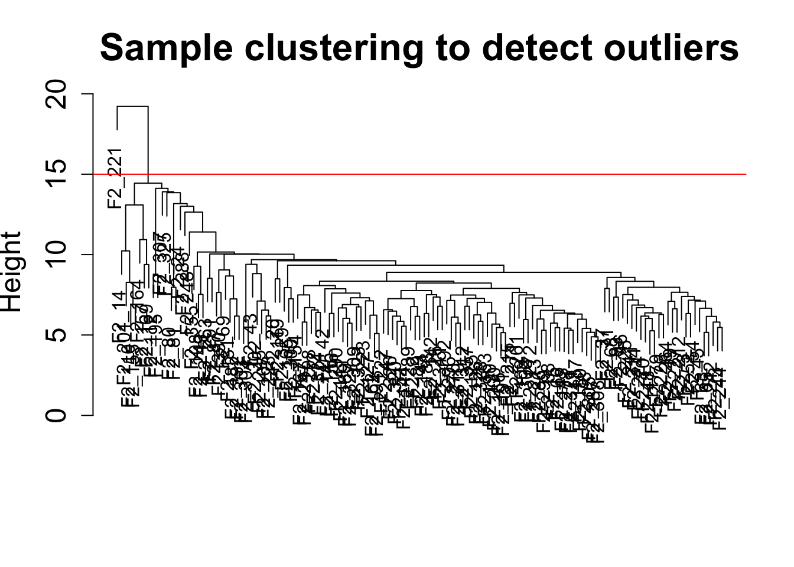
# Determine cluster under the line
clust = cutreeStatic(sampleTree, cutHeight = 15, minSize = 10)
table(clust)clust
0 1
1 134 # clust 1 contains the samples we want to keep.
keepSamples = (clust==1)
datExpr = datExpr0[keepSamples, ]
nGenes = ncol(datExpr)
nSamples = nrow(datExpr)134/135 samples do not have evidence of being outliers.
traitData = read.csv("../data/ClinicalTraits.csv");
dim(traitData)[1] 361 38# remove columns that hold information we do not need.
allTraits = traitData[, -c(31, 16)];
allTraits = allTraits[, c(2, 11:36) ];
dim(allTraits)[1] 361 27# Form a data frame analogous to expression data that will hold the clinical traits.
femaleSamples = rownames(datExpr);
traitRows = match(femaleSamples, allTraits$Mice);
datTraits = allTraits[traitRows, -1];
rownames(datTraits) = allTraits[traitRows, 1];
dim(datTraits)[1] 134 26names(datTraits) [1] "weight_g" "length_cm" "ab_fat"
[4] "other_fat" "total_fat" "X100xfat_weight"
[7] "Trigly" "Total_Chol" "HDL_Chol"
[10] "UC" "FFA" "Glucose"
[13] "LDL_plus_VLDL" "MCP_1_phys" "Insulin_ug_l"
[16] "Glucose_Insulin" "Leptin_pg_ml" "Adiponectin"
[19] "Aortic.lesions" "Aneurysm" "Aortic_cal_M"
[22] "Aortic_cal_L" "CoronaryArtery_Cal" "Myocardial_cal"
[25] "BMD_all_limbs" "BMD_femurs_only" There are 25 traits, many of which are related to weight and metabolism.
# Re-cluster samples
sampleTree2 = hclust(dist(datExpr), method = "average")
# Convert traits to a color representation: white means low, red means high, grey means missing entry
traitColors = numbers2colors(datTraits, signed = FALSE);
# Plot the sample dendrogram and the colors underneath.
plotDendroAndColors(sampleTree2, traitColors,
groupLabels = names(datTraits),
main = "Sample dendrogram and trait heatmap")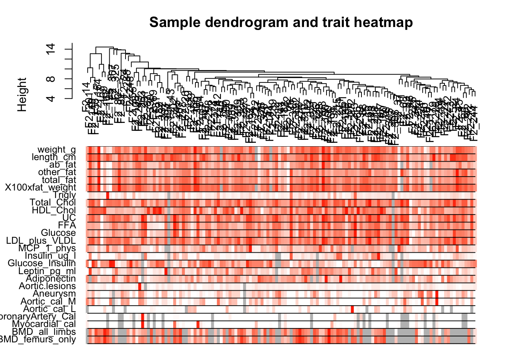
save(datExpr, datTraits, file = "../data/FemaleLiver-01-dataInput.RData")Legend: white means low, red means high, grey means missing entry
# Load the data saved in the previous section
lnames = load(file = "../data/FemaleLiver-01-dataInput.RData")
# Choose a set of soft-thresholding powers
powers = c(c(1:10), seq(from = 12, to=20, by=2))
# Call the network topology analysis function
sft = pickSoftThreshold(datExpr, powerVector = powers, verbose = 5)pickSoftThreshold: will use block size 3600.
pickSoftThreshold: calculating connectivity for given powers...
..working on genes 1 through 3600 of 3600
Power SFT.R.sq slope truncated.R.sq mean.k. median.k. max.k.
1 1 0.0278 0.345 0.456 747.00 762.0000 1210.0
2 2 0.1260 -0.597 0.843 254.00 251.0000 574.0
3 3 0.3400 -1.030 0.972 111.00 102.0000 324.0
4 4 0.5060 -1.420 0.973 56.50 47.2000 202.0
5 5 0.6810 -1.720 0.940 32.20 25.1000 134.0
6 6 0.9020 -1.500 0.962 19.90 14.5000 94.8
7 7 0.9210 -1.670 0.917 13.20 8.6800 84.1
8 8 0.9040 -1.720 0.876 9.25 5.3900 76.3
9 9 0.8590 -1.700 0.836 6.80 3.5600 70.5
10 10 0.8330 -1.660 0.831 5.19 2.3800 65.8
11 12 0.8530 -1.480 0.911 3.33 1.1500 58.1
12 14 0.8760 -1.380 0.949 2.35 0.5740 51.9
13 16 0.9070 -1.300 0.970 1.77 0.3090 46.8
14 18 0.9120 -1.240 0.973 1.39 0.1670 42.5
15 20 0.9310 -1.210 0.977 1.14 0.0951 38.7# Plot the results:
# Scale-free topology fit index as a function of the soft-thresholding power
plot(sft$fitIndices[,1], -sign(sft$fitIndices[,3])*sft$fitIndices[,2],
xlab="Soft Threshold (power)",ylab="Scale Free Topology Model Fit,signed R^2",type="n",
main = paste("Scale independence"));
text(sft$fitIndices[,1], -sign(sft$fitIndices[,3])*sft$fitIndices[,2],
labels=powers,col="red");
# this line corresponds to using an R^2 cut-off of h
abline(h=0.90,col="red")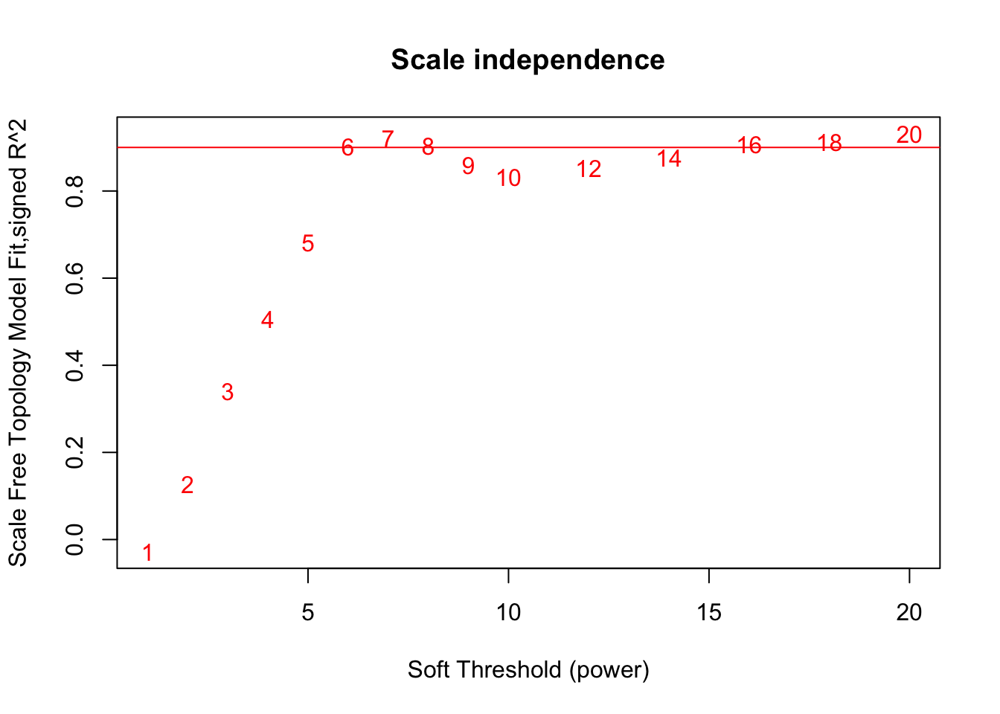
# Mean connectivity as a function of the soft-thresholding power
plot(sft$fitIndices[,1], sft$fitIndices[,5],
xlab="Soft Threshold (power)",ylab="Mean Connectivity", type="n",
main = paste("Mean connectivity"))
text(sft$fitIndices[,1], sft$fitIndices[,5], labels=powers,col="red")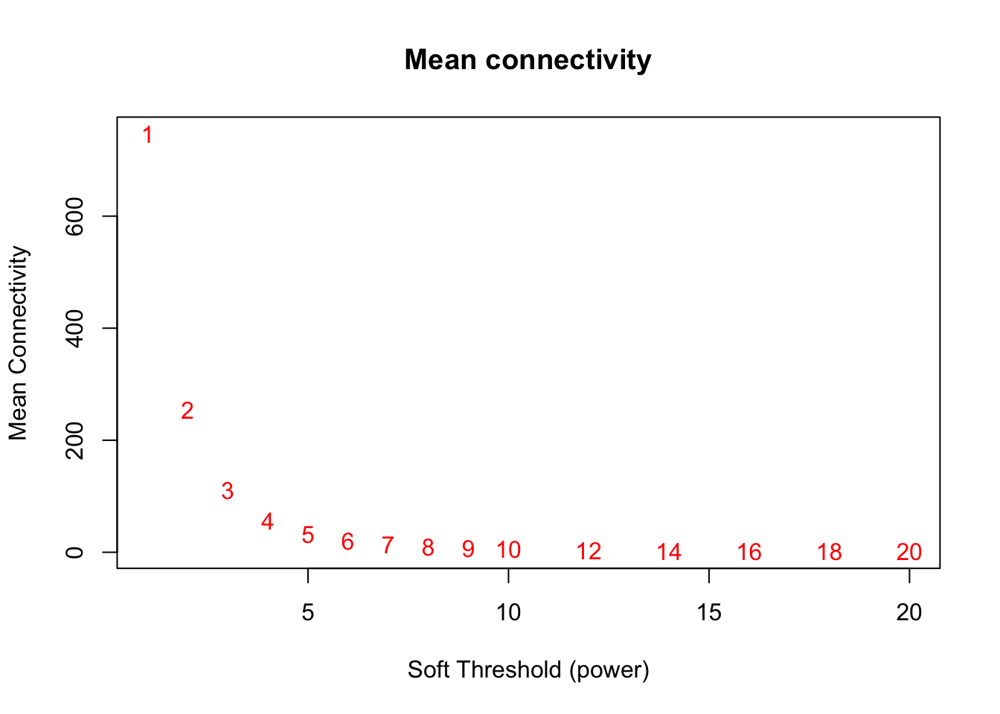
softPower = 6;
adjacency = adjacency(datExpr, power = softPower)
# Turn adjacency into topological overlap
TOM = TOMsimilarity(adjacency);..connectivity..
..matrix multiplication (system BLAS)..
..normalization..
..done.dissTOM = 1-TOMgeneTree = hclust(as.dist(dissTOM), method = "average");
# Plot the resulting clustering tree (dendrogram)
plot(geneTree, xlab="", sub="", main = "Gene clustering on TOM-based dissimilarity",
labels = FALSE, hang = 0.04)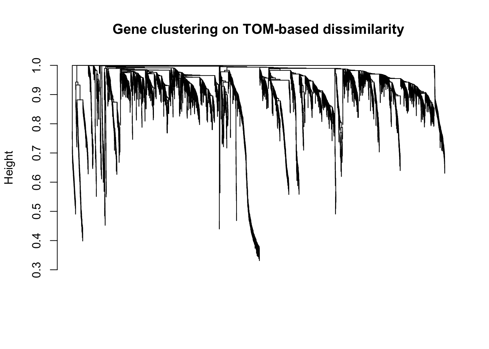
# We like large modules, so we set the minimum module size relatively high:
minModuleSize = 30;
# Module identification using dynamic tree cut:
dynamicMods = cutreeDynamic(dendro = geneTree, distM = dissTOM,
deepSplit = 2, pamRespectsDendro = FALSE,
minClusterSize = minModuleSize); ..cutHeight not given, setting it to 0.996 ===> 99% of the (truncated) height range in dendro.
..done.table(dynamicMods)dynamicMods
0 1 2 3 4 5 6 7 8 9 10 11 12 13 14 15 16 17
88 614 316 311 257 235 225 212 158 153 121 106 102 100 94 91 78 76
18 19 20 21 22
65 58 58 48 34 # Give each module a color
# Convert numeric lables into colors
dynamicColors = labels2colors(dynamicMods)
table(dynamicColors)dynamicColors
black blue brown cyan darkgreen
212 316 311 94 34
darkred green greenyellow grey grey60
48 235 106 88 76
lightcyan lightgreen lightyellow magenta midnightblue
78 65 58 153 91
pink purple red royalblue salmon
158 121 225 58 100
tan turquoise yellow
102 614 257 # Plot the dendrogram and colors underneath
plotDendroAndColors(geneTree, dynamicColors, "Dynamic Tree Cut",
dendroLabels = FALSE, hang = 0.03,
addGuide = TRUE, guideHang = 0.05,
main = "Gene dendrogram and module colors")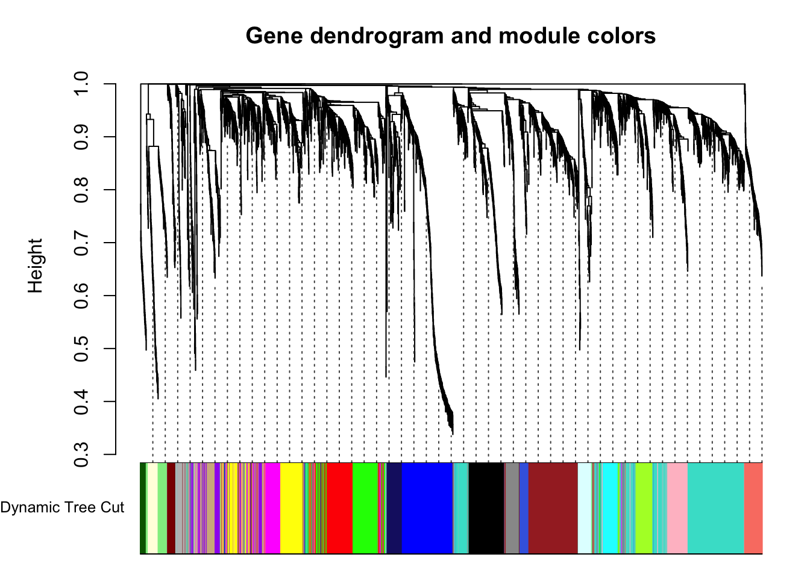
Each color represents a different module.
# Calculate eigengenes
MEList = moduleEigengenes(datExpr, colors = dynamicColors)
MEs = MEList$eigengenes
# Calculate dissimilarity of module eigengenes
MEDiss = 1-cor(MEs);
# Cluster module eigengenes
METree = hclust(as.dist(MEDiss), method = "average");
# Plot the result
plot(METree, main = "Clustering of module eigengenes",
xlab = "", sub = "")
MEDissThres = 0.25
# Plot the cut line into the dendrogram
abline(h=MEDissThres, col = "red")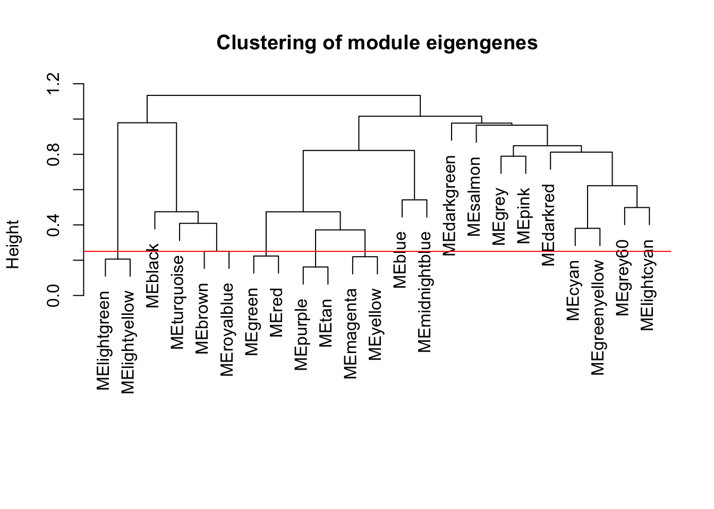
# Call an automatic merging function
merge = mergeCloseModules(datExpr, dynamicColors, cutHeight = MEDissThres, verbose = 3) mergeCloseModules: Merging modules whose distance is less than 0.25
multiSetMEs: Calculating module MEs.
Working on set 1 ...
moduleEigengenes: Calculating 23 module eigengenes in given set.
multiSetMEs: Calculating module MEs.
Working on set 1 ...
moduleEigengenes: Calculating 19 module eigengenes in given set.
Calculating new MEs...
multiSetMEs: Calculating module MEs.
Working on set 1 ...
moduleEigengenes: Calculating 19 module eigengenes in given set.# The merged module colors
mergedColors = merge$colors;
# Eigengenes of the new merged modules:
mergedMEs = merge$newMEs;
#pdf(file = "Plots/geneDendro-3.pdf", wi = 9, he = 6)
plotDendroAndColors(geneTree, cbind(dynamicColors, mergedColors),
c("Dynamic Tree Cut", "Merged dynamic"),
dendroLabels = FALSE, hang = 0.03,
addGuide = TRUE, guideHang = 0.05)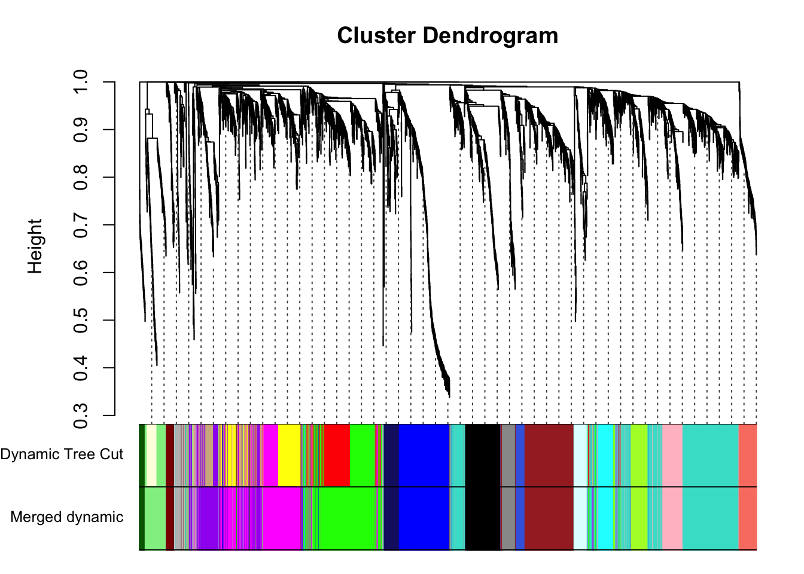
#dev.off()
# Rename to moduleColors
moduleColors = mergedColors
# Construct numerical labels corresponding to the colors
colorOrder = c("grey", standardColors(50));
moduleLabels = match(moduleColors, colorOrder)-1;
MEs = mergedMEs;
# Save module colors and labels for use in subsequent parts
save(MEs, moduleLabels, moduleColors, geneTree, file = "../data/FemaleLiver-02-networkConstruction-stepByStep.RData")Each color represents a different merged module.
# Load the expression and trait data saved in the first part
lnames = load(file = "../data/FemaleLiver-01-dataInput.RData");
#The variable lnames contains the names of loaded variables.
lnames[1] "datExpr" "datTraits"# Load network data saved in the second part.
lnames = load(file = "../data/FemaleLiver-02-networkConstruction-stepByStep.RData");
lnames[1] "MEs" "moduleLabels" "moduleColors" "geneTree" # Define numbers of genes and samples
nGenes = ncol(datExpr);
nSamples = nrow(datExpr);
# Recalculate MEs with color labels
MEs0 = moduleEigengenes(datExpr, moduleColors)$eigengenes
MEs = orderMEs(MEs0)
moduleTraitCor = cor(MEs, datTraits, use = "p");
moduleTraitPvalue = corPvalueStudent(moduleTraitCor, nSamples);
# Will display correlations. For space reasons, we will not display the p values of the correlations.
textMatrix = signif(moduleTraitCor, 2)
textMatrix = formatC(moduleTraitCor, digits = 2, format = "f")
dim(textMatrix) = dim(moduleTraitCor)
# Display the correlation values within a heatmap plot
labeledHeatmap(Matrix = moduleTraitCor,
xLabels = names(datTraits),
yLabels = names(MEs),
ySymbols = NULL,
colorLabels = FALSE,
colors = blueWhiteRed(50),
textMatrix = textMatrix,
setStdMargins = FALSE,
cex.text = 0.5,
zlim = c(-1,1),
main = paste("Gene Expression Module- Trait relationships"), ylab = "Gene Expression-Based Modules")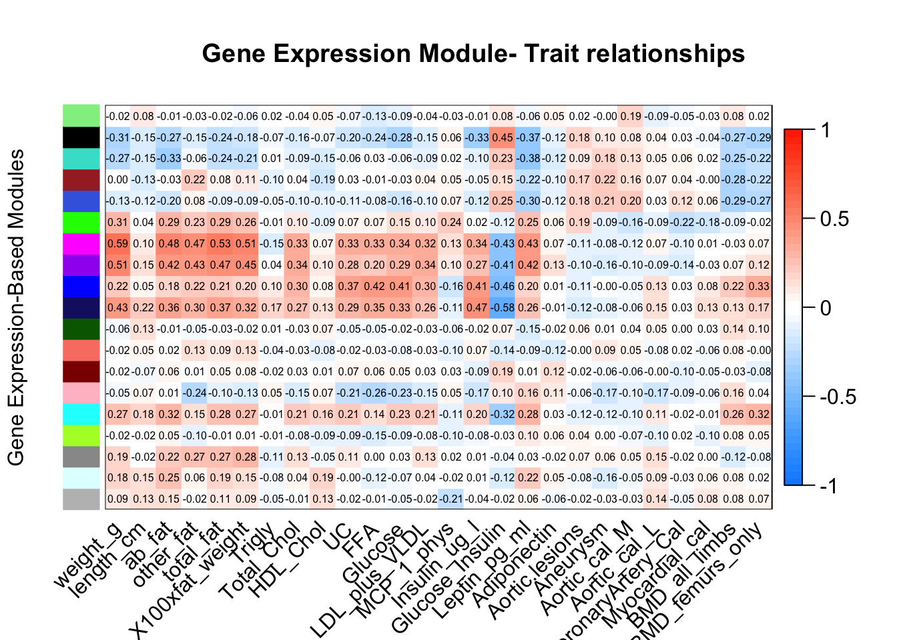
In this example, we will identify the key genes for weight in the brown module.
# Define variable weight containing the weight column of datTrait
weight = as.data.frame(datTraits$weight_g)
names(weight) = "weight"
# names (colors) of the modules
modNames = substring(names(MEs), 3)
geneModuleMembership = as.data.frame(cor(datExpr, MEs, use = "p"));
MMPvalue = as.data.frame(corPvalueStudent(as.matrix(geneModuleMembership), nSamples));
names(geneModuleMembership) = paste("MM", modNames, sep="");
names(MMPvalue) = paste("p.MM", modNames, sep="");
geneTraitSignificance = as.data.frame(cor(datExpr, weight, use = "p"));
GSPvalue = as.data.frame(corPvalueStudent(as.matrix(geneTraitSignificance), nSamples));
names(geneTraitSignificance) = paste("GS.", names(weight), sep="");
names(GSPvalue) = paste("p.GS.", names(weight), sep="")
module = "brown"
column = match(module, modNames);
moduleGenes = moduleColors==module;
# Identify genes in the brown module
#names(datExpr)[moduleColors=="brown"]These are all genes that were assigned to the brown module (based on gene expression values across the mice samples).
verboseScatterplot(abs(geneModuleMembership[moduleGenes, column]),
abs(geneTraitSignificance[moduleGenes, 1]),
xlab = paste("Module Membership in", module, "module"),
ylab = "Gene significance for body weight",
main = paste("Module membership vs. gene significance\n"),
cex.main = 1.2, cex.lab = 1.2, cex.axis = 1.2, col = module)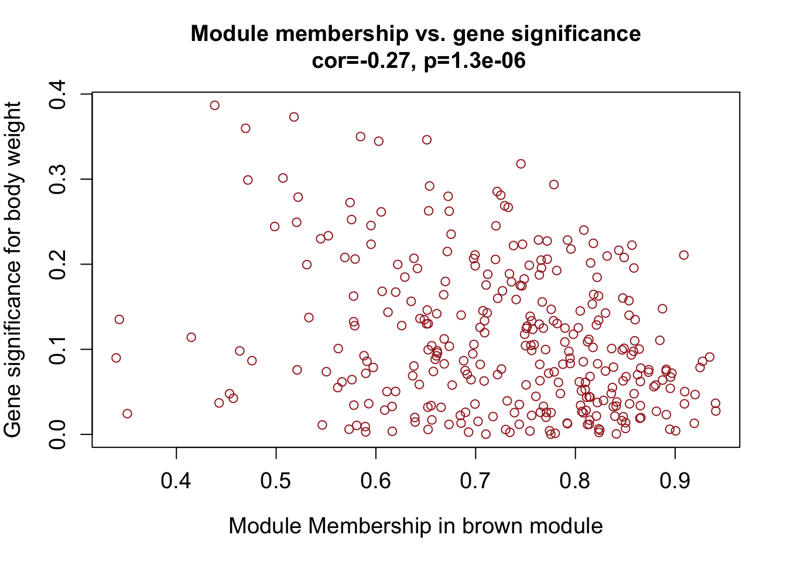
module = "blue"
column = match(module, modNames);
moduleGenes = moduleColors==module;
verboseScatterplot(abs(geneModuleMembership[moduleGenes, column]),
abs(geneTraitSignificance[moduleGenes, 1]),
xlab = paste("Module Membership in", module, "module"),
ylab = "Gene significance for body weight",
main = paste("Module membership vs. gene significance\n"),
cex.main = 1.2, cex.lab = 1.2, cex.axis = 1.2, col = module)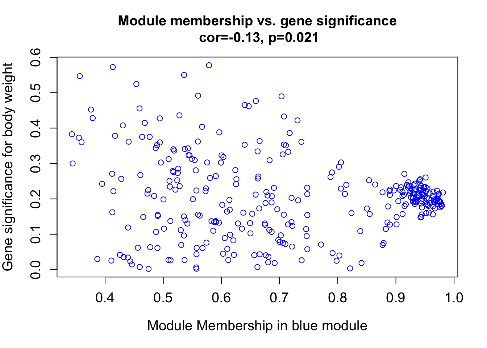
module = "black"
column = match(module, modNames);
moduleGenes = moduleColors==module;
verboseScatterplot(abs(geneModuleMembership[moduleGenes, column]),
abs(geneTraitSignificance[moduleGenes, 1]),
xlab = paste("Module Membership in", module, "module"),
ylab = "Gene significance for body weight",
main = paste("Module membership vs. gene significance\n"),
cex.main = 1.2, cex.lab = 1.2, cex.axis = 1.2, col = module)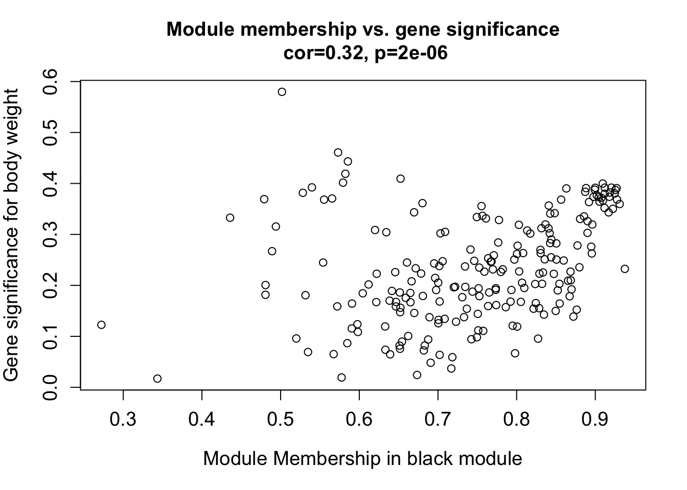
Overall, the genes in different modules have different relationships to body weight. In future tutorials, I will extract the modules/genes in each module that are most related to each trait of interest.
Begin by annotating the genes in the brown module.
module = "brown"
column = match(module, modNames);
moduleGenes = moduleColors==module;
annot = read.csv(file = "../data/GeneAnnotation.csv");
dim(annot)[1] 23388 34names(annot) [1] "X" "ID"
[3] "arrayname" "substanceBXH"
[5] "gene_symbol" "LocusLinkID"
[7] "OfficialGeneSymbol" "OfficialGeneName"
[9] "LocusLinkSymbol" "LocusLinkName"
[11] "ProteomeShortDescription" "UnigeneCluster"
[13] "LocusLinkCode" "ProteomeID"
[15] "ProteomeCode" "SwissprotID"
[17] "OMIMCode" "DirectedTilingPriority"
[19] "AlternateSymbols" "AlternateNames"
[21] "SpeciesID" "cytogeneticLoc"
[23] "Organism" "clustername"
[25] "reporterid" "probeid"
[27] "sequenceid" "clusterid"
[29] "chromosome" "startcoordinate"
[31] "endcoordinate" "strand"
[33] "sequence_3_to_5_prime" "sequence_5_to_3_prime" probes = names(datExpr)
probes2annot = match(probes, annot$substanceBXH)
# The following is the number or probes without annotation:
sum(is.na(probes2annot))[1] 0# Should return 0.
# Create the starting data frame
geneInfo0 = data.frame(substanceBXH = probes,
geneSymbol = annot$gene_symbol[probes2annot],
LocusLinkID = annot$LocusLinkID[probes2annot],
moduleColor = moduleColors,
geneTraitSignificance,
GSPvalue)
# Order modules by their significance for weight
modOrder = order(-abs(cor(MEs, weight, use = "p")));
# Add module membership information in the chosen order
for (mod in 1:ncol(geneModuleMembership))
{
oldNames = names(geneInfo0)
geneInfo0 = data.frame(geneInfo0, geneModuleMembership[, modOrder[mod]],
MMPvalue[, modOrder[mod]]);
names(geneInfo0) = c(oldNames, paste("MM.", modNames[modOrder[mod]], sep=""),
paste("p.MM.", modNames[modOrder[mod]], sep=""))
}
# Order the genes in the geneInfo variable first by module color, then by geneTraitSignificance
geneOrder = order(geneInfo0$moduleColor, -abs(geneInfo0$GS.weight));
geneInfo = geneInfo0[geneOrder, ]
head(geneInfo) substanceBXH geneSymbol LocusLinkID moduleColor GS.weight
MMT00030014 MMT00030014 9130422G05Rik 66819 black -0.5797950
MMT00035294 MMT00035294 BC010552 213603 black 0.4608253
MMT00074983 MMT00074983 Gpx4 14779 black 0.4432473
MMT00030149 MMT00030149 Gpx4 14779 black 0.4189853
MMT00007987 MMT00007987 Gpx4 14779 black 0.4094111
MMT00042811 MMT00042811 Pigr 18703 black -0.4016482
p.GS.weight MM.magenta p.MM.magenta MM.purple p.MM.purple
MMT00030014 2.125494e-13 -0.5549815 3.438475e-12 -0.5512728 5.111937e-12
MMT00035294 2.106843e-08 0.5054773 4.687405e-10 0.5193470 1.280101e-10
MMT00074983 8.165953e-08 0.5947134 3.549372e-14 0.6373045 1.242206e-16
MMT00030149 4.692800e-07 0.5689374 7.393799e-13 0.6202276 1.329847e-15
MMT00007987 9.018789e-07 0.5510731 5.221561e-12 0.5583696 2.383227e-12
MMT00042811 1.509430e-06 -0.4809395 4.058886e-09 -0.5319936 3.720844e-11
MM.midnightblue p.MM.midnightblue MM.green p.MM.green
MMT00030014 -0.4839750 3.136216e-09 -0.2782032 1.134863e-03
MMT00035294 0.3860561 4.086282e-06 0.2352532 6.214330e-03
MMT00074983 0.2411187 5.007772e-03 0.3642264 1.516448e-05
MMT00030149 0.2387445 5.468347e-03 0.3460945 4.201271e-05
MMT00007987 0.3009564 4.101444e-04 0.2414181 4.952235e-03
MMT00042811 -0.4744367 6.993629e-09 -0.2684587 1.710938e-03
MM.black p.MM.black MM.turquoise p.MM.turquoise
MMT00030014 0.5017235 6.594666e-10 0.4529226 3.910730e-08
MMT00035294 -0.5730351 4.643778e-13 -0.5169581 1.607498e-10
MMT00074983 -0.5854960 1.084155e-13 -0.3548666 2.586062e-05
MMT00030149 -0.5823211 1.579853e-13 -0.3647036 1.475074e-05
MMT00007987 -0.6524544 1.334562e-17 -0.2793583 1.079882e-03
MMT00042811 0.5793294 2.244356e-13 0.2166351 1.193131e-02
MM.cyan p.MM.cyan MM.blue p.MM.blue MM.grey60
MMT00030014 -0.326190162 1.199166e-04 -0.1813395 3.600175e-02 0.1189024
MMT00035294 0.422410947 3.696319e-07 0.3756367 7.731764e-06 -0.2045969
MMT00074983 0.196206451 2.308004e-02 0.2875542 7.545757e-04 -0.2315546
MMT00030149 0.194859694 2.405783e-02 0.2888851 7.111835e-04 -0.2568688
MMT00007987 0.356264831 2.390397e-05 0.5234320 8.636305e-11 -0.2311251
MMT00042811 0.007611576 9.304441e-01 -0.1424382 1.006363e-01 0.4388719
p.MM.grey60 MM.lightcyan p.MM.lightcyan MM.royalblue
MMT00030014 1.711995e-01 -0.28741053 0.0007594034 0.3370396
MMT00035294 1.772406e-02 0.15431482 0.0750322094 -0.5728978
MMT00074983 7.102181e-03 0.04174570 0.6319934336 -0.3848510
MMT00030149 2.734989e-03 0.02760477 0.7515358206 -0.4077315
MMT00007987 7.212232e-03 0.02901792 0.7392627566 -0.4648604
MMT00042811 1.130773e-07 -0.04993357 0.5666682377 0.2428837
p.MM.royalblue MM.grey p.MM.grey MM.darkgreen
MMT00030014 6.830386e-05 -0.140364649 0.1057413 0.05205909
MMT00035294 4.717194e-13 0.142221395 0.1011609 -0.10660602
MMT00074983 4.404013e-06 0.015268846 0.8609979 -0.13203061
MMT00030149 1.009301e-06 0.005678271 0.9480821 -0.11172000
MMT00007987 1.526960e-08 0.021564010 0.8046671 -0.07999121
MMT00042811 4.688186e-03 -0.016252612 0.8521410 0.12909818
p.MM.darkgreen MM.pink p.MM.pink MM.salmon p.MM.salmon
MMT00030014 0.5502490 -0.27398344 0.001358142 0.08515411 0.3279391
MMT00035294 0.2202026 0.30024435 0.000423962 0.06052297 0.4872574
MMT00074983 0.1283322 0.20908148 0.015330428 -0.01677004 0.8474899
MMT00030149 0.1987350 0.23420897 0.006454404 -0.01273465 0.8838905
MMT00007987 0.3582193 0.03426783 0.694261923 -0.02529043 0.7717691
MMT00042811 0.1371080 -0.22307233 0.009575641 0.03635921 0.6766176
MM.greenyellow p.MM.greenyellow MM.lightgreen p.MM.lightgreen
MMT00030014 -0.0001808971 0.99834486 -0.02324890 0.7897463
MMT00035294 0.1680142302 0.05231873 0.01975180 0.8207942
MMT00074983 -0.0206252821 0.81301115 -0.05260653 0.5460579
MMT00030149 -0.0019002493 0.98261474 -0.03843569 0.6592709
MMT00007987 -0.0361345787 0.67850459 -0.04574199 0.5997112
MMT00042811 0.1069841155 0.21856127 -0.09018670 0.3000532
MM.darkred p.MM.darkred MM.brown p.MM.brown
MMT00030014 0.096612799 0.2667852 0.4388297 1.134305e-07
MMT00035294 -0.003927328 0.9640783 -0.5268738 6.173766e-11
MMT00074983 -0.047729988 0.5839319 -0.3842532 4.570170e-06
MMT00030149 -0.051793917 0.5522847 -0.4041729 1.278471e-06
MMT00007987 -0.070092458 0.4209537 -0.4169993 5.382791e-07
MMT00042811 0.097778954 0.2610280 0.4905595 1.776925e-09# Save the file
write.csv(geneInfo, file = "../data/geneInfo.csv")Note: Since the function GoEnrichmentAnalysis is defunction, per the author’s suggestion, we are using the function enrichmentAnalysis from the package “AnRichment” from the same authors. For more information about this package, go here.
# Load the expression and trait data saved in the first part
lnames = load(file = "../data/FemaleLiver-01-dataInput.RData")
#The variable lnames contains the names of loaded variables.
lnames[1] "datExpr" "datTraits"# Load network data saved in the second part.
lnames = load(file = "../data/FemaleLiver-02-networkConstruction-stepByStep.RData")
lnames[1] "MEs" "moduleLabels" "moduleColors" "geneTree" # Read in the probe annotation
annot = read.csv(file = "../data/GeneAnnotation.csv");
# Match probes in the data set to the probe IDs in the annotation file
probes = names(datExpr)
probes2annot = match(probes, annot$substanceBXH)
# Get the corresponding Locuis Link IDs
allLLIDs = annot$LocusLinkID[probes2annot];
# $ Choose interesting modules
intModules = c("brown", "red", "salmon")
for (module in intModules)
{
# Select module probes
modGenes = (moduleColors==module)
# Get their entrez ID codes
modLLIDs = allLLIDs[modGenes];
# Write them into a file
fileName = paste("LocusLinkIDs-", module, ".txt", sep="");
write.table(as.data.frame(modLLIDs), file = fileName,
row.names = FALSE, col.names = FALSE)
}
# As background in the enrichment analysis, we will use all probes in the analysis.
fileName = paste("../data/LocusLinkIDs-all.txt", sep="");
write.table(as.data.frame(allLLIDs), file = fileName,
row.names = FALSE, col.names = FALSE)# Use the GO collection for mouse GO terms.
GOcollection = buildGOcollection(organism = "mouse")Loading required package: org.Mm.eg.db GOcollection: loading annotation data...
..preparing term lists... # Run the GO enrichment
GOenr = enrichmentAnalysis(
classLabels = moduleColors, identifiers = allLLIDs,
refCollection = GOcollection,
useBackground = "allOrgGenes",
threshold = 1e-4,
thresholdType = "Bonferroni",
getOverlapEntrez = TRUE,
getOverlapSymbols = TRUE,
ignoreLabels = "grey") enrichmentAnalysis: preparing data..
..working on label set 1 ..names(GOenr) [1] "enrichmentIsValid" "enrichmentTable"
[3] "pValues" "Bonferroni"
[5] "FDR" "countsInDataSet"
[7] "effectiveBackgroundSize" "dataSetDetails"
[9] "identifierIsInCollection" "effectiveClassLabels" names(GOenr$dataSetDetails) [1] "black" "blue" "brown" "cyan"
[5] "darkgreen" "darkred" "green" "greenyellow"
[9] "grey60" "lightcyan" "lightgreen" "magenta"
[13] "midnightblue" "pink" "purple" "royalblue"
[17] "salmon" "turquoise" GOenr$dataSetDetails$black$GO.0008150
$GO.0008150$dataSetID
[1] "GO:0008150"
$GO.0008150$dataSetName
[1] "biological_process"
$GO.0008150$dataSetDescription
[1] "Any process specifically pertinent to the functioning of integrated living units: cells, tissues, organs, and organisms. A process is a collection of molecular events with a defined beginning and end."
$GO.0008150$dataSetGroups
[1] "GO" "GO.BP"
$GO.0008150$enrichmentP
[1] 2.438238e-58
$GO.0008150$commonGeneEntrez
[1] 215280 70846 15379 26356 331524 18996 72333 14459 14897 12295
[11] 17311 242466 387132 53902 277939 56613 16530 239134 329972 67653
[21] 21949 22420 30878 233437 320923 19017 218490 57315 268686 258740
[31] 16181 74068 18441 18679 231045 71602 54635 243548 19158 22526
[41] 14160 12724 14067 271887 329872 319653 241520 243538 231201 105005
[51] 243634 14563 11731 26930 11839 213603 54393 353047 19289 231452
[61] 215654 207921 64934 243385 244310 213765 75725 57257 246080 13349
[71] 18703 60510 244650 244646 223642 21823 30046 192188 78896 20234
[81] 236904 80718 208583 213788 320982 21952 269800 71063 18150 66942
[91] 64113 66125 56735 76757 171228 214162 80976 21784 230751 71562
[101] 19724 20666 235497 76441 13510 83428 192663 319848 258558 67781
[111] 22635 219094 75777 380842 77805 268747 231760 19317 75645 320869
[121] 20299 140488 14177 66323 76895 19193 110829 212391 381535 54388
[131] 193003 230119 320790 30959 60367 59310 258610 108012 234373 16192
[141] 258590 22634
$GO.0008150$commonGenePositions
[1] 75 85 94 97 191 281 282 295 297 304 317 331 364 375
[15] 420 432 488 495 497 509 528 531 532 543 561 565 579 588
[29] 619 625 638 674 735 752 768 785 790 805 813 833 869 878
[43] 895 933 1013 1071 1084 1136 1167 1246 1256 1278 1291 1303 1319 1358
[57] 1406 1420 1448 1449 1452 1453 1489 1517 1528 1559 1562 1586 1595 1615
[71] 1635 1653 1663 1667 1671 1704 1708 1709 1710 1757 1759 1794 1805 1828
[85] 1848 1856 1865 1894 1897 1909 1915 1941 1947 1978 1991 2004 2010 2016
[99] 2054 2067 2077 2087 2148 2174 2234 2240 2247 2263 2269 2273 2358 2404
[113] 2418 2424 2429 2431 2439 2456 2477 2497 2525 2580 2612 2637 2646 2648
[127] 2744 2755 2770 2798 2835 2842 2878 2893 2925 2927 2992 2998 3116 3125
[141] 3209 3216
$GO.0005575
$GO.0005575$dataSetID
[1] "GO:0005575"
$GO.0005575$dataSetName
[1] "cellular_component"
$GO.0005575$dataSetDescription
[1] "The part of a cell, extracellular environment or virus in which a gene product is located. A gene product may be located in one or more parts of a cell and its location may be as specific as a particular macromolecular complex, that is, a stable, persistent association of macromolecules that function together."
$GO.0005575$dataSetGroups
[1] "GO" "GO.CC"
$GO.0005575$enrichmentP
[1] 5.715e-57
$GO.0005575$commonGeneEntrez
[1] 215280 70846 15379 26356 331524 18996 72333 14459 14897 12295
[11] 17311 242466 53902 277939 56613 16530 239134 329972 67653 21949
[21] 22420 30878 240921 233437 320923 19017 218490 57315 268686 258740
[31] 16181 74068 18441 18679 231045 71602 54635 243548 19158 22526
[41] 14160 12724 14067 271887 329872 319653 241520 243538 231201 105005
[51] 243634 14563 11731 26930 11839 213603 54393 353047 19289 231452
[61] 215654 207921 64934 243385 244310 213765 75725 57257 246080 13349
[71] 18703 60510 244650 244646 223642 21823 30046 192188 78896 20234
[81] 236904 80718 208583 213788 320982 21952 269800 71063 18150 66942
[91] 64113 66125 56735 76757 171228 214162 80976 21784 230751 71562
[101] 19724 20666 235497 76441 13510 83428 192663 319848 258558 67781
[111] 22635 219094 75777 77805 268747 231760 19317 75645 320869 20299
[121] 140488 14177 66323 76895 19193 110829 212391 381535 54388 193003
[131] 230119 320790 30959 60367 59310 258610 108012 234373 16192 258590
[141] 22634
$GO.0005575$commonGenePositions
[1] 75 85 94 97 191 281 282 295 297 304 317 331 375 420
[15] 432 488 495 497 509 528 531 532 533 543 561 565 579 588
[29] 619 625 638 674 735 752 768 785 790 805 813 833 869 878
[43] 895 933 1013 1071 1084 1136 1167 1246 1256 1278 1291 1303 1319 1358
[57] 1406 1420 1448 1449 1452 1453 1489 1517 1528 1559 1562 1586 1595 1615
[71] 1635 1653 1663 1667 1671 1704 1708 1709 1710 1757 1759 1794 1805 1828
[85] 1848 1856 1865 1894 1897 1909 1915 1941 1947 1978 1991 2004 2010 2016
[99] 2054 2067 2077 2087 2148 2174 2234 2240 2247 2263 2269 2273 2358 2404
[113] 2418 2429 2431 2439 2456 2477 2497 2525 2580 2612 2637 2646 2648 2744
[127] 2755 2770 2798 2835 2842 2878 2893 2925 2927 2992 2998 3116 3125 3209
[141] 3216
$GO.0003674
$GO.0003674$dataSetID
[1] "GO:0003674"
$GO.0003674$dataSetName
[1] "molecular_function"
$GO.0003674$dataSetDescription
[1] "The actions of a single gene product or complex at the molecular level consisting of a single biochemical activity or multiple causally linked biochemical activities. A given gene product may exhibit one or more molecular functions."
$GO.0003674$dataSetGroups
[1] "GO" "GO.MF"
$GO.0003674$enrichmentP
[1] 9.508689e-57
$GO.0003674$commonGeneEntrez
[1] 215280 70846 15379 26356 331524 18996 72333 14459 14897 12295
[11] 17311 242466 387132 53902 277939 56613 16530 239134 329972 67653
[21] 21949 22420 30878 240921 233437 320923 19017 218490 57315 268686
[31] 258740 16181 74068 18441 18679 231045 71602 54635 243548 19158
[41] 22526 14160 12724 14067 271887 329872 319653 241520 243538 231201
[51] 105005 243634 14563 11731 26930 11839 213603 54393 353047 19289
[61] 231452 215654 207921 64934 243385 244310 213765 75725 57257 246080
[71] 13349 18703 60510 244650 244646 223642 21823 30046 192188 78896
[81] 20234 236904 80718 208583 213788 320982 21952 269800 71063 18150
[91] 66942 64113 66125 56735 76757 171228 214162 80976 21784 71562
[101] 19724 20666 235497 76441 13510 83428 192663 319848 258558 67781
[111] 22635 219094 75777 77805 268747 19317 75645 320869 20299 140488
[121] 14177 66323 76895 19193 110829 212391 381535 54388 193003 230119
[131] 320790 30959 60367 59310 258610 108012 234373 16192 258590 22634
$GO.0003674$commonGenePositions
[1] 75 85 94 97 191 281 282 295 297 304 317 331 364 375
[15] 420 432 488 495 497 509 528 531 532 533 543 561 565 579
[29] 588 619 625 638 674 735 752 768 785 790 805 813 833 869
[43] 878 895 933 1013 1071 1084 1136 1167 1246 1256 1278 1291 1303 1319
[57] 1358 1406 1420 1448 1449 1452 1453 1489 1517 1528 1559 1562 1586 1595
[71] 1615 1635 1653 1663 1667 1671 1704 1708 1709 1710 1757 1759 1794 1805
[85] 1828 1848 1856 1865 1894 1897 1909 1915 1941 1947 1978 1991 2004 2010
[99] 2016 2067 2077 2087 2148 2174 2234 2240 2247 2263 2269 2273 2358 2404
[113] 2418 2429 2431 2456 2477 2497 2525 2580 2612 2637 2646 2648 2744 2755
[127] 2770 2798 2835 2842 2878 2893 2925 2927 2992 2998 3116 3125 3209 3216
$GO.0044464
$GO.0044464$dataSetID
[1] "GO:0044464"
$GO.0044464$dataSetName
[1] "cell part"
$GO.0044464$dataSetDescription
[1] "Any constituent part of a cell, the basic structural and functional unit of all organisms."
$GO.0044464$dataSetGroups
[1] "GO" "GO.CC"
$GO.0044464$enrichmentP
[1] 1.289221e-39
$GO.0044464$commonGeneEntrez
[1] 215280 15379 26356 18996 72333 14897 12295 17311 242466 53902
[11] 277939 56613 16530 239134 22420 30878 240921 320923 19017 218490
[21] 57315 16181 74068 18441 18679 71602 54635 243548 19158 22526
[31] 14160 12724 14067 319653 243538 231201 243634 14563 11731 11839
[41] 54393 353047 231452 215654 64934 244310 213765 75725 57257 13349
[51] 18703 60510 244650 244646 223642 21823 30046 192188 78896 236904
[61] 80718 208583 213788 320982 21952 269800 18150 66942 64113 66125
[71] 56735 76757 171228 214162 80976 21784 230751 71562 19724 20666
[81] 235497 13510 83428 192663 319848 67781 22635 75777 77805 268747
[91] 231760 19317 75645 320869 140488 14177 76895 19193 110829 212391
[101] 54388 193003 230119 320790 30959 59310 108012 234373 22634
$GO.0044464$commonGenePositions
[1] 75 94 97 281 282 297 304 317 331 375 420 432 488 495
[15] 531 532 533 561 565 579 588 638 674 735 752 785 790 805
[29] 813 833 869 878 895 1071 1136 1167 1256 1278 1291 1319 1406 1420
[43] 1449 1452 1489 1528 1559 1562 1586 1615 1635 1653 1663 1667 1671 1704
[57] 1708 1709 1710 1759 1794 1805 1828 1848 1856 1865 1897 1909 1915 1941
[71] 1947 1978 1991 2004 2010 2016 2054 2067 2077 2087 2148 2234 2240 2247
[85] 2263 2273 2358 2418 2429 2431 2439 2456 2477 2497 2580 2612 2646 2648
[99] 2744 2755 2798 2835 2842 2878 2893 2927 2998 3116 3216
$GO.0005623
$GO.0005623$dataSetID
[1] "GO:0005623"
$GO.0005623$dataSetName
[1] "cell"
$GO.0005623$dataSetDescription
[1] "The basic structural and functional unit of all organisms. Includes the plasma membrane and any external encapsulating structures such as the cell wall and cell envelope."
$GO.0005623$dataSetGroups
[1] "GO" "GO.CC"
$GO.0005623$enrichmentP
[1] 1.339126e-39
$GO.0005623$commonGeneEntrez
[1] 215280 15379 26356 18996 72333 14897 12295 17311 242466 53902
[11] 277939 56613 16530 239134 22420 30878 240921 320923 19017 218490
[21] 57315 16181 74068 18441 18679 71602 54635 243548 19158 22526
[31] 14160 12724 14067 319653 243538 231201 243634 14563 11731 11839
[41] 54393 353047 231452 215654 64934 244310 213765 75725 57257 13349
[51] 18703 60510 244650 244646 223642 21823 30046 192188 78896 236904
[61] 80718 208583 213788 320982 21952 269800 18150 66942 64113 66125
[71] 56735 76757 171228 214162 80976 21784 230751 71562 19724 20666
[81] 235497 13510 83428 192663 319848 67781 22635 75777 77805 268747
[91] 231760 19317 75645 320869 140488 14177 76895 19193 110829 212391
[101] 54388 193003 230119 320790 30959 59310 108012 234373 22634
$GO.0005623$commonGenePositions
[1] 75 94 97 281 282 297 304 317 331 375 420 432 488 495
[15] 531 532 533 561 565 579 588 638 674 735 752 785 790 805
[29] 813 833 869 878 895 1071 1136 1167 1256 1278 1291 1319 1406 1420
[43] 1449 1452 1489 1528 1559 1562 1586 1615 1635 1653 1663 1667 1671 1704
[57] 1708 1709 1710 1759 1794 1805 1828 1848 1856 1865 1897 1909 1915 1941
[71] 1947 1978 1991 2004 2010 2016 2054 2067 2077 2087 2148 2234 2240 2247
[85] 2263 2273 2358 2418 2429 2431 2439 2456 2477 2497 2580 2612 2646 2648
[99] 2744 2755 2798 2835 2842 2878 2893 2927 2998 3116 3216
$GO.0009987
$GO.0009987$dataSetID
[1] "GO:0009987"
$GO.0009987$dataSetName
[1] "cellular process"
$GO.0009987$dataSetDescription
[1] "Any process that is carried out at the cellular level, but not necessarily restricted to a single cell. For example, cell communication occurs among more than one cell, but occurs at the cellular level."
$GO.0009987$dataSetGroups
[1] "GO" "GO.BP"
$GO.0009987$enrichmentP
[1] 7.187382e-36
$GO.0009987$commonGeneEntrez
[1] 215280 15379 26356 18996 72333 14459 14897 12295 17311 242466
[11] 387132 53902 277939 56613 16530 239134 21949 22420 30878 320923
[21] 19017 218490 57315 258740 16181 74068 18441 18679 71602 54635
[31] 243548 19158 22526 14160 12724 329872 231201 14563 11731 11839
[41] 54393 353047 231452 64934 244310 75725 57257 13349 18703 60510
[51] 244650 244646 223642 21823 30046 78896 236904 80718 208583 213788
[61] 320982 269800 18150 66942 64113 66125 56735 76757 214162 80976
[71] 21784 230751 71562 19724 20666 235497 76441 83428 192663 258558
[81] 67781 22635 380842 77805 231760 19317 20299 140488 14177 76895
[91] 19193 110829 212391 54388 193003 230119 320790 30959 60367 258610
[101] 108012 234373 16192 258590 22634
$GO.0009987$commonGenePositions
[1] 75 94 97 281 282 295 297 304 317 331 364 375 420 432
[15] 488 495 528 531 532 561 565 579 588 625 638 674 735 752
[29] 785 790 805 813 833 869 878 1013 1167 1278 1291 1319 1406 1420
[43] 1449 1489 1528 1562 1586 1615 1635 1653 1663 1667 1671 1704 1708 1710
[57] 1759 1794 1805 1828 1848 1865 1897 1909 1915 1941 1947 1978 2004 2010
[71] 2016 2054 2067 2077 2087 2148 2174 2240 2247 2269 2273 2358 2424 2429
[85] 2439 2456 2525 2580 2612 2646 2648 2744 2755 2798 2835 2842 2878 2893
[99] 2925 2992 2998 3116 3125 3209 3216
$GO.0005488
$GO.0005488$dataSetID
[1] "GO:0005488"
$GO.0005488$dataSetName
[1] "binding"
$GO.0005488$dataSetDescription
[1] "The selective, non-covalent, often stoichiometric, interaction of a molecule with one or more specific sites on another molecule."
$GO.0005488$dataSetGroups
[1] "GO" "GO.MF"
$GO.0005488$enrichmentP
[1] 1.35211e-34
$GO.0005488$commonGeneEntrez
[1] 215280 15379 26356 18996 72333 14459 14897 12295 17311 53902
[11] 277939 56613 239134 329972 21949 22420 30878 240921 320923 19017
[21] 218490 57315 258740 16181 74068 18441 18679 231045 71602 54635
[31] 243548 19158 14067 329872 243634 14563 11731 11839 54393 353047
[41] 215654 64934 244310 75725 57257 13349 18703 60510 244650 244646
[51] 223642 21823 30046 192188 20234 80718 208583 320982 21952 269800
[61] 18150 66942 64113 76757 171228 214162 80976 21784 19724 20666
[71] 235497 76441 13510 83428 192663 67781 22635 77805 19317 20299
[81] 140488 14177 76895 19193 110829 212391 54388 193003 230119 320790
[91] 30959 59310 258610 108012 234373 22634
$GO.0005488$commonGenePositions
[1] 75 94 97 281 282 295 297 304 317 375 420 432 495 497
[15] 528 531 532 533 561 565 579 588 625 638 674 735 752 768
[29] 785 790 805 813 895 1013 1256 1278 1291 1319 1406 1420 1452 1489
[43] 1528 1562 1586 1615 1635 1653 1663 1667 1671 1704 1708 1709 1757 1794
[57] 1805 1848 1856 1865 1897 1909 1915 1978 1991 2004 2010 2016 2077 2087
[71] 2148 2174 2234 2240 2247 2273 2358 2429 2456 2525 2580 2612 2646 2648
[85] 2744 2755 2798 2835 2842 2878 2893 2927 2992 2998 3116 3216
$GO.0065007
$GO.0065007$dataSetID
[1] "GO:0065007"
$GO.0065007$dataSetName
[1] "biological regulation"
$GO.0065007$dataSetDescription
[1] "Any process that modulates a measurable attribute of any biological process, quality or function."
$GO.0065007$dataSetGroups
[1] "GO" "GO.BP"
$GO.0065007$enrichmentP
[1] 9.885065e-30
$GO.0065007$commonGeneEntrez
[1] 215280 15379 26356 18996 72333 14459 14897 12295 17311 242466
[11] 387132 53902 277939 56613 16530 239134 21949 22420 30878 19017
[21] 218490 57315 258740 16181 74068 18441 71602 54635 19158 14160
[31] 12724 14067 14563 11731 11839 54393 353047 64934 75725 57257
[41] 13349 18703 60510 244650 223642 21823 30046 192188 236904 80718
[51] 208583 213788 320982 21952 269800 64113 76757 214162 80976 21784
[61] 230751 19724 20666 235497 83428 258558 67781 22635 380842 77805
[71] 231760 19317 20299 140488 14177 110829 212391 54388 193003 230119
[81] 320790 30959 60367 258610 16192 258590 22634
$GO.0065007$commonGenePositions
[1] 75 94 97 281 282 295 297 304 317 331 364 375 420 432
[15] 488 495 528 531 532 565 579 588 625 638 674 735 785 790
[29] 813 869 878 895 1278 1291 1319 1406 1420 1489 1562 1586 1615 1635
[43] 1653 1663 1671 1704 1708 1709 1759 1794 1805 1828 1848 1856 1865 1915
[57] 1978 2004 2010 2016 2054 2077 2087 2148 2240 2269 2273 2358 2424 2429
[71] 2439 2456 2525 2580 2612 2744 2755 2798 2835 2842 2878 2893 2925 2992
[85] 3125 3209 3216
$GO.0050789
$GO.0050789$dataSetID
[1] "GO:0050789"
$GO.0050789$dataSetName
[1] "regulation of biological process"
$GO.0050789$dataSetDescription
[1] "Any process that modulates the frequency, rate or extent of a biological process. Biological processes are regulated by many means; examples include the control of gene expression, protein modification or interaction with a protein or substrate molecule."
$GO.0050789$dataSetGroups
[1] "GO" "GO.BP"
$GO.0050789$enrichmentP
[1] 1.648543e-29
$GO.0050789$commonGeneEntrez
[1] 215280 15379 26356 18996 72333 14459 14897 12295 17311 242466
[11] 387132 53902 277939 56613 16530 239134 21949 22420 30878 19017
[21] 218490 57315 258740 16181 74068 18441 71602 54635 19158 14160
[31] 12724 14563 11839 54393 353047 64934 75725 57257 13349 18703
[41] 60510 244650 223642 21823 30046 192188 236904 80718 208583 213788
[51] 320982 21952 269800 64113 76757 214162 80976 21784 230751 19724
[61] 20666 235497 83428 258558 67781 22635 380842 77805 231760 19317
[71] 20299 140488 14177 110829 212391 54388 193003 230119 320790 30959
[81] 60367 258610 16192 258590 22634
$GO.0050789$commonGenePositions
[1] 75 94 97 281 282 295 297 304 317 331 364 375 420 432
[15] 488 495 528 531 532 565 579 588 625 638 674 735 785 790
[29] 813 869 878 1278 1319 1406 1420 1489 1562 1586 1615 1635 1653 1663
[43] 1671 1704 1708 1709 1759 1794 1805 1828 1848 1856 1865 1915 1978 2004
[57] 2010 2016 2054 2077 2087 2148 2240 2269 2273 2358 2424 2429 2439 2456
[71] 2525 2580 2612 2744 2755 2798 2835 2842 2878 2893 2925 2992 3125 3209
[85] 3216
$GO.0044424
$GO.0044424$dataSetID
[1] "GO:0044424"
$GO.0044424$dataSetName
[1] "intracellular part"
$GO.0044424$dataSetDescription
[1] "Any constituent part of the living contents of a cell; the matter contained within (but not including) the plasma membrane, usually taken to exclude large vacuoles and masses of secretory or ingested material. In eukaryotes it includes the nucleus and cytoplasm."
$GO.0044424$dataSetGroups
[1] "GO" "GO.CC"
$GO.0044424$enrichmentP
[1] 1.90121e-29
$GO.0044424$commonGeneEntrez
[1] 215280 15379 26356 18996 72333 14897 12295 17311 242466 53902
[11] 277939 56613 239134 30878 240921 320923 19017 218490 57315 16181
[21] 74068 18441 18679 71602 54635 243548 19158 22526 14160 14067
[31] 319653 243538 231201 243634 11731 11839 54393 353047 231452 64934
[41] 213765 75725 57257 13349 18703 60510 244650 223642 21823 30046
[51] 192188 78896 236904 80718 208583 320982 21952 269800 18150 66942
[61] 64113 66125 56735 76757 214162 80976 21784 71562 19724 20666
[71] 235497 67781 75777 77805 268747 19317 75645 320869 140488 76895
[81] 19193 110829 212391 54388 230119 320790 30959 59310 108012 234373
[91] 22634
$GO.0044424$commonGenePositions
[1] 75 94 97 281 282 297 304 317 331 375 420 432 495 532
[15] 533 561 565 579 588 638 674 735 752 785 790 805 813 833
[29] 869 895 1071 1136 1167 1256 1291 1319 1406 1420 1449 1489 1559 1562
[43] 1586 1615 1635 1653 1663 1671 1704 1708 1709 1710 1759 1794 1805 1848
[57] 1856 1865 1897 1909 1915 1941 1947 1978 2004 2010 2016 2067 2077 2087
[71] 2148 2273 2418 2429 2431 2456 2477 2497 2580 2646 2648 2744 2755 2798
[85] 2842 2878 2893 2927 2998 3116 3216
$GO.0005622
$GO.0005622$dataSetID
[1] "GO:0005622"
$GO.0005622$dataSetName
[1] "intracellular"
$GO.0005622$dataSetDescription
[1] "The living contents of a cell; the matter contained within (but not including) the plasma membrane, usually taken to exclude large vacuoles and masses of secretory or ingested material. In eukaryotes it includes the nucleus and cytoplasm."
$GO.0005622$dataSetGroups
[1] "GO" "GO.CC"
$GO.0005622$enrichmentP
[1] 3.668046e-29
$GO.0005622$commonGeneEntrez
[1] 215280 15379 26356 18996 72333 14897 12295 17311 242466 53902
[11] 277939 56613 239134 30878 240921 320923 19017 218490 57315 16181
[21] 74068 18441 18679 71602 54635 243548 19158 22526 14160 14067
[31] 319653 243538 231201 243634 11731 11839 54393 353047 231452 64934
[41] 213765 75725 57257 13349 18703 60510 244650 223642 21823 30046
[51] 192188 78896 236904 80718 208583 320982 21952 269800 18150 66942
[61] 64113 66125 56735 76757 214162 80976 21784 71562 19724 20666
[71] 235497 67781 75777 77805 268747 19317 75645 320869 140488 76895
[81] 19193 110829 212391 54388 230119 320790 30959 59310 108012 234373
[91] 22634
$GO.0005622$commonGenePositions
[1] 75 94 97 281 282 297 304 317 331 375 420 432 495 532
[15] 533 561 565 579 588 638 674 735 752 785 790 805 813 833
[29] 869 895 1071 1136 1167 1256 1291 1319 1406 1420 1449 1489 1559 1562
[43] 1586 1615 1635 1653 1663 1671 1704 1708 1709 1710 1759 1794 1805 1848
[57] 1856 1865 1897 1909 1915 1941 1947 1978 2004 2010 2016 2067 2077 2087
[71] 2148 2273 2418 2429 2431 2456 2477 2497 2580 2646 2648 2744 2755 2798
[85] 2842 2878 2893 2927 2998 3116 3216
$GO.0043226
$GO.0043226$dataSetID
[1] "GO:0043226"
$GO.0043226$dataSetName
[1] "organelle"
$GO.0043226$dataSetDescription
[1] "Organized structure of distinctive morphology and function. Includes the nucleus, mitochondria, plastids, vacuoles, vesicles, ribosomes and the cytoskeleton, and prokaryotic structures such as anammoxosomes and pirellulosomes. Excludes the plasma membrane."
$GO.0043226$dataSetGroups
[1] "GO" "GO.CC"
$GO.0043226$enrichmentP
[1] 1.330148e-25
$GO.0043226$commonGeneEntrez
[1] 215280 15379 26356 18996 72333 14897 12295 17311 242466 277939
[11] 56613 240921 320923 19017 218490 57315 16181 74068 18441 71602
[21] 54635 243548 22526 14160 14067 319653 243538 231201 243634 11731
[31] 11839 54393 353047 231452 64934 213765 75725 57257 13349 18703
[41] 60510 244650 244646 223642 21823 30046 78896 236904 80718 208583
[51] 21952 269800 18150 66942 64113 66125 56735 76757 214162 80976
[61] 71562 19724 20666 235497 76441 13510 67781 75777 77805 19317
[71] 75645 320869 140488 76895 19193 212391 54388 230119 320790 30959
[81] 59310 108012 234373 22634
$GO.0043226$commonGenePositions
[1] 75 94 97 281 282 297 304 317 331 420 432 533 561 565
[15] 579 588 638 674 735 785 790 805 833 869 895 1071 1136 1167
[29] 1256 1291 1319 1406 1420 1449 1489 1559 1562 1586 1615 1635 1653 1663
[43] 1667 1671 1704 1708 1710 1759 1794 1805 1856 1865 1897 1909 1915 1941
[57] 1947 1978 2004 2010 2067 2077 2087 2148 2174 2234 2273 2418 2429 2456
[71] 2477 2497 2580 2646 2648 2755 2798 2842 2878 2893 2927 2998 3116 3216
$GO.0050794
$GO.0050794$dataSetID
[1] "GO:0050794"
$GO.0050794$dataSetName
[1] "regulation of cellular process"
$GO.0050794$dataSetDescription
[1] "Any process that modulates the frequency, rate or extent of a cellular process, any of those that are carried out at the cellular level, but are not necessarily restricted to a single cell. For example, cell communication occurs among more than one cell, but occurs at the cellular level."
$GO.0050794$dataSetGroups
[1] "GO" "GO.BP"
$GO.0050794$enrichmentP
[1] 4.997529e-24
$GO.0050794$commonGeneEntrez
[1] 15379 26356 18996 72333 14459 14897 17311 242466 387132 53902
[11] 277939 56613 239134 21949 22420 30878 19017 218490 57315 258740
[21] 16181 18441 71602 54635 19158 14160 14563 11839 54393 353047
[31] 64934 75725 57257 13349 18703 60510 244650 223642 30046 236904
[41] 80718 208583 213788 320982 269800 64113 76757 214162 80976 21784
[51] 230751 19724 20666 235497 83428 258558 67781 22635 380842 77805
[61] 231760 19317 20299 140488 14177 110829 212391 54388 193003 230119
[71] 320790 30959 60367 258610 258590 22634
$GO.0050794$commonGenePositions
[1] 94 97 281 282 295 297 317 331 364 375 420 432 495 528
[15] 531 532 565 579 588 625 638 735 785 790 813 869 1278 1319
[29] 1406 1420 1489 1562 1586 1615 1635 1653 1663 1671 1708 1759 1794 1805
[43] 1828 1848 1865 1915 1978 2004 2010 2016 2054 2077 2087 2148 2240 2269
[57] 2273 2358 2424 2429 2439 2456 2525 2580 2612 2744 2755 2798 2835 2842
[71] 2878 2893 2925 2992 3209 3216
$GO.0043229
$GO.0043229$dataSetID
[1] "GO:0043229"
$GO.0043229$dataSetName
[1] "intracellular organelle"
$GO.0043229$dataSetDescription
[1] "Organized structure of distinctive morphology and function, occurring within the cell. Includes the nucleus, mitochondria, plastids, vacuoles, vesicles, ribosomes and the cytoskeleton. Excludes the plasma membrane."
$GO.0043229$dataSetGroups
[1] "GO" "GO.CC"
$GO.0043229$enrichmentP
[1] 1.370919e-23
$GO.0043229$commonGeneEntrez
[1] 215280 15379 26356 18996 72333 14897 12295 17311 242466 277939
[11] 56613 240921 320923 19017 218490 57315 74068 18441 71602 54635
[21] 243548 22526 14160 14067 319653 243538 231201 243634 11731 11839
[31] 54393 353047 231452 64934 213765 75725 13349 18703 60510 244650
[41] 223642 21823 30046 78896 236904 80718 208583 21952 269800 18150
[51] 66942 64113 66125 56735 76757 214162 80976 71562 19724 20666
[61] 235497 67781 75777 77805 19317 320869 140488 76895 19193 212391
[71] 54388 230119 320790 30959 59310 108012 234373 22634
$GO.0043229$commonGenePositions
[1] 75 94 97 281 282 297 304 317 331 420 432 533 561 565
[15] 579 588 674 735 785 790 805 833 869 895 1071 1136 1167 1256
[29] 1291 1319 1406 1420 1449 1489 1559 1562 1615 1635 1653 1663 1671 1704
[43] 1708 1710 1759 1794 1805 1856 1865 1897 1909 1915 1941 1947 1978 2004
[57] 2010 2067 2077 2087 2148 2273 2418 2429 2456 2497 2580 2646 2648 2755
[71] 2798 2842 2878 2893 2927 2998 3116 3216
$GO.0005515
$GO.0005515$dataSetID
[1] "GO:0005515"
$GO.0005515$dataSetName
[1] "protein binding"
$GO.0005515$dataSetDescription
[1] "Interacting selectively and non-covalently with any protein or protein complex (a complex of two or more proteins that may include other nonprotein molecules)."
$GO.0005515$dataSetGroups
[1] "GO" "GO.MF"
$GO.0005515$enrichmentP
[1] 3.815666e-23
$GO.0005515$commonGeneEntrez
[1] 215280 26356 18996 72333 14459 14897 12295 17311 53902 277939
[11] 56613 21949 22420 30878 240921 320923 19017 16181 74068 18441
[21] 18679 71602 54635 243548 19158 243634 14563 11839 54393 353047
[31] 64934 244310 57257 13349 18703 60510 244646 223642 21823 80718
[41] 320982 21952 269800 18150 64113 76757 214162 80976 21784 235497
[51] 76441 13510 83428 192663 77805 19317 20299 140488 14177 76895
[61] 19193 110829 212391 193003 320790 59310 108012 22634
$GO.0005515$commonGenePositions
[1] 75 97 281 282 295 297 304 317 375 420 432 528 531 532
[15] 533 561 565 638 674 735 752 785 790 805 813 1256 1278 1319
[29] 1406 1420 1489 1528 1586 1615 1635 1653 1667 1671 1704 1794 1848 1856
[43] 1865 1897 1915 1978 2004 2010 2016 2148 2174 2234 2240 2247 2429 2456
[57] 2525 2580 2612 2646 2648 2744 2755 2835 2878 2927 2998 3216
$GO.0050896
$GO.0050896$dataSetID
[1] "GO:0050896"
$GO.0050896$dataSetName
[1] "response to stimulus"
$GO.0050896$dataSetDescription
[1] "Any process that results in a change in state or activity of a cell or an organism (in terms of movement, secretion, enzyme production, gene expression, etc.) as a result of a stimulus. The process begins with detection of the stimulus and ends with a change in state or activity or the cell or organism."
$GO.0050896$dataSetGroups
[1] "GO" "GO.BP"
$GO.0050896$enrichmentP
[1] 7.452242e-22
$GO.0050896$commonGeneEntrez
[1] 215280 15379 18996 14459 14897 12295 17311 53902 277939 56613
[11] 239134 21949 22420 30878 19017 258740 16181 18441 71602 54635
[21] 19158 14160 14067 14563 11731 11839 54393 353047 231452 75725
[31] 57257 246080 13349 18703 244650 244646 223642 21823 192188 78896
[41] 236904 208583 213788 320982 21952 64113 76757 171228 214162 21784
[51] 19724 20666 235497 83428 192663 258558 67781 20299 14177 110829
[61] 193003 320790 60367 258610 108012 16192 258590
$GO.0050896$commonGenePositions
[1] 75 94 281 295 297 304 317 375 420 432 495 528 531 532
[15] 565 625 638 735 785 790 813 869 895 1278 1291 1319 1406 1420
[29] 1449 1562 1586 1595 1615 1635 1663 1667 1671 1704 1709 1710 1759 1805
[43] 1828 1848 1856 1915 1978 1991 2004 2016 2077 2087 2148 2240 2247 2269
[57] 2273 2525 2612 2744 2835 2878 2925 2992 2998 3125 3209
$GO.0043227
$GO.0043227$dataSetID
[1] "GO:0043227"
$GO.0043227$dataSetName
[1] "membrane-bounded organelle"
$GO.0043227$dataSetDescription
[1] "Organized structure of distinctive morphology and function, bounded by a single or double lipid bilayer membrane. Includes the nucleus, mitochondria, plastids, vacuoles, and vesicles. Excludes the plasma membrane."
$GO.0043227$dataSetGroups
[1] "GO" "GO.CC"
$GO.0043227$enrichmentP
[1] 7.489262e-22
$GO.0043227$commonGeneEntrez
[1] 215280 15379 26356 18996 72333 14897 12295 242466 56613 240921
[11] 19017 218490 57315 16181 18441 71602 54635 243548 22526 14160
[21] 14067 319653 231201 243634 11731 11839 54393 353047 231452 64934
[31] 213765 75725 57257 13349 18703 60510 244650 244646 223642 21823
[41] 30046 78896 236904 80718 208583 269800 18150 66942 64113 66125
[51] 56735 76757 214162 80976 71562 19724 20666 235497 76441 13510
[61] 67781 77805 19317 320869 140488 76895 19193 212391 54388 230119
[71] 320790 30959 59310 108012 234373 22634
$GO.0043227$commonGenePositions
[1] 75 94 97 281 282 297 304 331 432 533 565 579 588 638
[15] 735 785 790 805 833 869 895 1071 1167 1256 1291 1319 1406 1420
[29] 1449 1489 1559 1562 1586 1615 1635 1653 1663 1667 1671 1704 1708 1710
[43] 1759 1794 1805 1865 1897 1909 1915 1941 1947 1978 2004 2010 2067 2077
[57] 2087 2148 2174 2234 2273 2429 2456 2497 2580 2646 2648 2755 2798 2842
[71] 2878 2893 2927 2998 3116 3216
$GO.0051179
$GO.0051179$dataSetID
[1] "GO:0051179"
$GO.0051179$dataSetName
[1] "localization"
$GO.0051179$dataSetDescription
[1] "Any process in which a cell, a substance, or a cellular entity, such as a protein complex or organelle, is transported, tethered to or otherwise maintained in a specific location. In the case of substances, localization may also be achieved via selective degradation."
$GO.0051179$dataSetGroups
[1] "GO" "GO.BP"
$GO.0051179$enrichmentP
[1] 1.162834e-20
$GO.0051179$commonGeneEntrez
[1] 215280 15379 26356 18996 72333 12295 17311 277939 16530 30878
[11] 19017 218490 57315 16181 18441 71602 54635 12724 319653 243634
[21] 14563 54393 353047 231452 64934 57257 18703 60510 244646 223642
[31] 21823 192188 80718 213788 320982 269800 64113 76757 214162 80976
[41] 230751 20666 83428 319848 19317 20299 140488 76895 110829 193003
[51] 320790 30959 108012
$GO.0051179$commonGenePositions
[1] 75 94 97 281 282 304 317 420 488 532 565 579 588 638
[15] 735 785 790 878 1071 1256 1278 1406 1420 1449 1489 1586 1635 1653
[29] 1667 1671 1704 1709 1794 1828 1848 1865 1915 1978 2004 2010 2054 2087
[43] 2240 2263 2456 2525 2580 2646 2744 2835 2878 2893 2998
$GO.0005737
$GO.0005737$dataSetID
[1] "GO:0005737"
$GO.0005737$dataSetName
[1] "cytoplasm"
$GO.0005737$dataSetDescription
[1] "All of the contents of a cell excluding the plasma membrane and nucleus, but including other subcellular structures."
$GO.0005737$dataSetGroups
[1] "GO" "GO.CC"
$GO.0005737$enrichmentP
[1] 6.135854e-19
$GO.0005737$commonGeneEntrez
[1] 215280 18996 72333 14897 12295 17311 53902 277939 56613 239134
[11] 30878 240921 320923 19017 218490 16181 74068 18441 18679 71602
[21] 54635 243548 19158 14160 14067 319653 243538 11731 11839 54393
[31] 353047 64934 213765 57257 13349 18703 60510 244650 21823 192188
[41] 78896 80718 320982 21952 18150 66942 64113 56735 76757 214162
[51] 80976 21784 71562 20666 67781 75777 268747 19317 75645 320869
[61] 140488 76895 19193 110829 30959 59310 108012 22634
$GO.0005737$commonGenePositions
[1] 75 281 282 297 304 317 375 420 432 495 532 533 561 565
[15] 579 638 674 735 752 785 790 805 813 869 895 1071 1136 1291
[29] 1319 1406 1420 1489 1559 1586 1615 1635 1653 1663 1704 1709 1710 1794
[43] 1848 1856 1897 1909 1915 1947 1978 2004 2010 2016 2067 2087 2273 2418
[57] 2431 2456 2477 2497 2580 2646 2648 2744 2893 2927 2998 3216
$GO.0016020
$GO.0016020$dataSetID
[1] "GO:0016020"
$GO.0016020$dataSetName
[1] "membrane"
$GO.0016020$dataSetDescription
[1] "A lipid bilayer along with all the proteins and protein complexes embedded in it an attached to it."
$GO.0016020$dataSetGroups
[1] "GO" "GO.CC"
$GO.0016020$enrichmentP
[1] 7.45324e-19
$GO.0016020$commonGeneEntrez
[1] 331524 72333 12295 17311 16530 239134 21949 240921 320923 258740
[11] 18441 18679 54635 243548 19158 14160 12724 14067 329872 319653
[21] 241520 243634 14563 11839 213603 54393 353047 19289 215654 64934
[31] 244310 57257 13349 18703 60510 244650 244646 21823 192188 80718
[41] 213788 320982 66942 64113 76757 171228 80976 230751 13510 192663
[51] 319848 258558 67781 22635 268747 231760 14177 76895 110829 193003
[61] 60367 258610 108012 16192 258590
$GO.0016020$commonGenePositions
[1] 191 282 304 317 488 495 528 533 561 625 735 752 790 805
[15] 813 869 878 895 1013 1071 1084 1256 1278 1319 1358 1406 1420 1448
[29] 1452 1489 1528 1586 1615 1635 1653 1663 1667 1704 1709 1794 1828 1848
[43] 1909 1915 1978 1991 2010 2054 2234 2247 2263 2269 2273 2358 2431 2439
[57] 2612 2646 2744 2835 2925 2992 2998 3125 3209
$GO.0051234
$GO.0051234$dataSetID
[1] "GO:0051234"
$GO.0051234$dataSetName
[1] "establishment of localization"
$GO.0051234$dataSetDescription
[1] "Any process that localizes a substance or cellular component. This may occur via movement, tethering or selective degradation."
$GO.0051234$dataSetGroups
[1] "GO" "GO.BP"
$GO.0051234$enrichmentP
[1] 1.420725e-18
$GO.0051234$commonGeneEntrez
[1] 215280 26356 12295 16530 30878 19017 218490 57315 16181 18441
[11] 71602 12724 319653 243634 14563 54393 353047 231452 57257 18703
[21] 60510 244646 223642 21823 192188 80718 213788 320982 269800 64113
[31] 76757 214162 80976 230751 20666 83428 319848 19317 140488 76895
[41] 110829 193003 320790 30959 108012
$GO.0051234$commonGenePositions
[1] 75 97 304 488 532 565 579 588 638 735 785 878 1071 1256
[15] 1278 1406 1420 1449 1586 1635 1653 1667 1671 1704 1709 1794 1828 1848
[29] 1865 1915 1978 2004 2010 2054 2087 2240 2263 2456 2580 2646 2744 2835
[43] 2878 2893 2998
$GO.0032501
$GO.0032501$dataSetID
[1] "GO:0032501"
$GO.0032501$dataSetName
[1] "multicellular organismal process"
$GO.0032501$dataSetDescription
[1] "Any biological process, occurring at the level of a multicellular organism, pertinent to its function."
$GO.0032501$dataSetGroups
[1] "GO" "GO.BP"
$GO.0032501$enrichmentP
[1] 2.00965e-18
$GO.0032501$commonGeneEntrez
[1] 15379 18996 72333 14897 17311 277939 21949 22420 30878 19017
[11] 218490 258740 16181 74068 18441 71602 54635 243548 19158 14160
[21] 12724 14067 329872 14563 11839 54393 353047 19289 75725 57257
[31] 13349 18703 244646 21823 192188 213788 21952 56735 76757 171228
[41] 214162 21784 20666 235497 76441 83428 258558 19317 14177 110829
[51] 54388 193003 320790 30959 258610 108012 16192 258590 22634
$GO.0032501$commonGenePositions
[1] 94 281 282 297 317 420 528 531 532 565 579 625 638 674
[15] 735 785 790 805 813 869 878 895 1013 1278 1319 1406 1420 1448
[29] 1562 1586 1615 1635 1667 1704 1709 1828 1856 1947 1978 1991 2004 2016
[43] 2087 2148 2174 2240 2269 2456 2612 2744 2798 2835 2878 2893 2992 2998
[57] 3125 3209 3216
$GO.0006810
$GO.0006810$dataSetID
[1] "GO:0006810"
$GO.0006810$dataSetName
[1] "transport"
$GO.0006810$dataSetDescription
[1] "The directed movement of substances (such as macromolecules, small molecules, ions) or cellular components (such as complexes and organelles) into, out of or within a cell, or between cells, or within a multicellular organism by means of some agent such as a transporter, pore or motor protein."
$GO.0006810$dataSetGroups
[1] "GO" "GO.BP"
$GO.0006810$enrichmentP
[1] 3.195472e-18
$GO.0006810$commonGeneEntrez
[1] 215280 26356 12295 16530 30878 19017 218490 57315 16181 18441
[11] 71602 12724 319653 243634 14563 54393 353047 231452 57257 18703
[21] 60510 244646 223642 21823 192188 80718 213788 320982 269800 64113
[31] 76757 214162 80976 230751 20666 83428 319848 19317 140488 76895
[41] 193003 320790 30959 108012
$GO.0006810$commonGenePositions
[1] 75 97 304 488 532 565 579 588 638 735 785 878 1071 1256
[15] 1278 1406 1420 1449 1586 1635 1653 1667 1671 1704 1709 1794 1828 1848
[29] 1865 1915 1978 2004 2010 2054 2087 2240 2263 2456 2580 2646 2835 2878
[43] 2893 2998
$GO.0007154
$GO.0007154$dataSetID
[1] "GO:0007154"
$GO.0007154$dataSetName
[1] "cell communication"
$GO.0007154$dataSetDescription
[1] "Any process that mediates interactions between a cell and its surroundings. Encompasses interactions such as signaling or attachment between one cell and another cell, between a cell and an extracellular matrix, or between a cell and any other aspect of its environment."
$GO.0007154$dataSetGroups
[1] "GO" "GO.BP"
$GO.0007154$enrichmentP
[1] 1.313473e-17
$GO.0007154$commonGeneEntrez
[1] 15379 18996 14459 12295 17311 53902 277939 56613 239134 22420
[11] 30878 19017 258740 16181 18441 71602 54635 19158 14160 329872
[21] 14563 11839 54393 353047 244310 75725 57257 13349 18703 60510
[31] 244650 223642 21823 208583 213788 320982 64113 76757 214162 80976
[41] 20666 235497 83428 258558 20299 14177 110829 193003 320790 60367
[51] 258610 258590
$GO.0007154$commonGenePositions
[1] 94 281 295 304 317 375 420 432 495 531 532 565 625 638
[15] 735 785 790 813 869 1013 1278 1319 1406 1420 1528 1562 1586 1615
[29] 1635 1653 1663 1671 1704 1805 1828 1848 1915 1978 2004 2010 2087 2148
[43] 2240 2269 2525 2612 2744 2835 2878 2925 2992 3209
$GO.0006725
$GO.0006725$dataSetID
[1] "GO:0006725"
$GO.0006725$dataSetName
[1] "cellular aromatic compound metabolic process"
$GO.0006725$dataSetDescription
[1] "The chemical reactions and pathways involving aromatic compounds, any organic compound characterized by one or more planar rings, each of which contains conjugated double bonds and delocalized pi electrons, as carried out by individual cells."
$GO.0006725$dataSetGroups
[1] "GO" "GO.BP"
$GO.0006725$enrichmentP
[1] 1.513507e-17
$GO.0006725$commonGeneEntrez
[1] 15379 26356 18996 14897 17311 242466 387132 56613 239134 21949
[11] 22420 19017 218490 57315 74068 18441 54635 14563 11839 54393
[21] 64934 75725 223642 21823 30046 236904 269800 18150 66942 66125
[31] 214162 71562 19724 20666 235497 67781 77805 19317 19193 110829
[41] 212391 54388 230119 320790 30959 234373 22634
$GO.0006725$commonGenePositions
[1] 94 97 281 297 317 331 364 432 495 528 531 565 579 588
[15] 674 735 790 1278 1319 1406 1489 1562 1671 1704 1708 1759 1865 1897
[29] 1909 1941 2004 2067 2077 2087 2148 2273 2429 2456 2648 2744 2755 2798
[43] 2842 2878 2893 3116 3216
$GO.0043231
$GO.0043231$dataSetID
[1] "GO:0043231"
$GO.0043231$dataSetName
[1] "intracellular membrane-bounded organelle"
$GO.0043231$dataSetDescription
[1] "Organized structure of distinctive morphology and function, bounded by a single or double lipid bilayer membrane and occurring within the cell. Includes the nucleus, mitochondria, plastids, vacuoles, and vesicles. Excludes the plasma membrane."
$GO.0043231$dataSetGroups
[1] "GO" "GO.CC"
$GO.0043231$enrichmentP
[1] 2.61619e-17
$GO.0043231$commonGeneEntrez
[1] 15379 26356 18996 72333 14897 12295 242466 56613 240921 19017
[11] 218490 57315 18441 54635 243548 22526 14160 14067 319653 231201
[21] 243634 11731 11839 54393 353047 231452 64934 213765 75725 244650
[31] 223642 21823 30046 236904 80718 208583 269800 18150 66942 64113
[41] 66125 76757 214162 80976 71562 19724 20666 235497 67781 77805
[51] 19317 320869 140488 76895 19193 212391 54388 230119 320790 30959
[61] 59310 108012 234373 22634
$GO.0043231$commonGenePositions
[1] 94 97 281 282 297 304 331 432 533 565 579 588 735 790
[15] 805 833 869 895 1071 1167 1256 1291 1319 1406 1420 1449 1489 1559
[29] 1562 1663 1671 1704 1708 1759 1794 1805 1865 1897 1909 1915 1941 1978
[43] 2004 2010 2067 2077 2087 2148 2273 2429 2456 2497 2580 2646 2648 2755
[57] 2798 2842 2878 2893 2927 2998 3116 3216
$GO.0005634
$GO.0005634$dataSetID
[1] "GO:0005634"
$GO.0005634$dataSetName
[1] "nucleus"
$GO.0005634$dataSetDescription
[1] "A membrane-bounded organelle of eukaryotic cells in which chromosomes are housed and replicated. In most cells, the nucleus contains all of the cell's chromosomes except the organellar chromosomes, and is the site of RNA synthesis and processing. In some species, or in specialized cell types, RNA metabolism or DNA replication may be absent."
$GO.0005634$dataSetGroups
[1] "GO" "GO.CC"
$GO.0005634$enrichmentP
[1] 2.91499e-17
$GO.0005634$commonGeneEntrez
[1] 15379 26356 18996 72333 14897 242466 56613 240921 19017 218490
[11] 57315 54635 243548 22526 231201 243634 11731 11839 353047 231452
[21] 64934 213765 75725 244650 223642 21823 30046 236904 208583 269800
[31] 18150 66942 64113 66125 214162 71562 19724 20666 235497 67781
[41] 77805 19317 320869 140488 76895 212391 54388 230119 320790 30959
[51] 234373 22634
$GO.0005634$commonGenePositions
[1] 94 97 281 282 297 331 432 533 565 579 588 790 805 833
[15] 1167 1256 1291 1319 1420 1449 1489 1559 1562 1663 1671 1704 1708 1759
[29] 1805 1865 1897 1909 1915 1941 2004 2067 2077 2087 2148 2273 2429 2456
[43] 2497 2580 2646 2755 2798 2842 2878 2893 3116 3216
$GO.0023052
$GO.0023052$dataSetID
[1] "GO:0023052"
$GO.0023052$dataSetName
[1] "signaling"
$GO.0023052$dataSetDescription
[1] "The entirety of a process in which information is transmitted within a biological system. This process begins with an active signal and ends when a cellular response has been triggered."
$GO.0023052$dataSetGroups
[1] "GO" "GO.BP"
$GO.0023052$enrichmentP
[1] 4.689208e-17
$GO.0023052$commonGeneEntrez
[1] 15379 18996 14459 12295 17311 53902 277939 56613 239134 22420
[11] 30878 19017 258740 16181 18441 71602 54635 19158 14160 14563
[21] 11839 54393 353047 244310 75725 57257 13349 18703 60510 244650
[31] 223642 21823 208583 213788 320982 64113 76757 214162 80976 20666
[41] 235497 83428 258558 20299 14177 110829 193003 320790 60367 258610
[51] 258590
$GO.0023052$commonGenePositions
[1] 94 281 295 304 317 375 420 432 495 531 532 565 625 638
[15] 735 785 790 813 869 1278 1319 1406 1420 1528 1562 1586 1615 1635
[29] 1653 1663 1671 1704 1805 1828 1848 1915 1978 2004 2010 2087 2148 2240
[43] 2269 2525 2612 2744 2835 2878 2925 2992 3209
$GO.1901360
$GO.1901360$dataSetID
[1] "GO:1901360"
$GO.1901360$dataSetName
[1] "organic cyclic compound metabolic process"
$GO.1901360$dataSetDescription
[1] "The chemical reactions and pathways involving organic cyclic compound."
$GO.1901360$dataSetGroups
[1] "GO" "GO.BP"
$GO.1901360$enrichmentP
[1] 5.62363e-17
$GO.1901360$commonGeneEntrez
[1] 15379 26356 18996 14897 17311 242466 387132 56613 239134 21949
[11] 22420 19017 218490 57315 74068 18441 54635 14563 11839 54393
[21] 64934 75725 223642 21823 30046 236904 269800 18150 66942 66125
[31] 214162 71562 19724 20666 235497 67781 77805 19317 19193 110829
[41] 212391 54388 230119 320790 30959 234373 22634
$GO.1901360$commonGenePositions
[1] 94 97 281 297 317 331 364 432 495 528 531 565 579 588
[15] 674 735 790 1278 1319 1406 1489 1562 1671 1704 1708 1759 1865 1897
[29] 1909 1941 2004 2067 2077 2087 2148 2273 2429 2456 2648 2744 2755 2798
[43] 2842 2878 2893 3116 3216
$GO.0046483
$GO.0046483$dataSetID
[1] "GO:0046483"
$GO.0046483$dataSetName
[1] "heterocycle metabolic process"
$GO.0046483$dataSetDescription
[1] "The chemical reactions and pathways involving heterocyclic compounds, those with a cyclic molecular structure and at least two different atoms in the ring (or rings)."
$GO.0046483$dataSetGroups
[1] "GO" "GO.BP"
$GO.0046483$enrichmentP
[1] 5.662844e-17
$GO.0046483$commonGeneEntrez
[1] 15379 26356 18996 14897 17311 242466 387132 56613 239134 21949
[11] 22420 19017 218490 57315 74068 18441 54635 14563 11839 54393
[21] 64934 75725 223642 30046 236904 269800 18150 66942 66125 214162
[31] 71562 19724 20666 235497 67781 77805 19317 19193 110829 212391
[41] 54388 230119 320790 30959 234373 22634
$GO.0046483$commonGenePositions
[1] 94 97 281 297 317 331 364 432 495 528 531 565 579 588
[15] 674 735 790 1278 1319 1406 1489 1562 1671 1708 1759 1865 1897 1909
[29] 1941 2004 2067 2077 2087 2148 2273 2429 2456 2648 2744 2755 2798 2842
[43] 2878 2893 3116 3216
$GO.0051716
$GO.0051716$dataSetID
[1] "GO:0051716"
$GO.0051716$dataSetName
[1] "cellular response to stimulus"
$GO.0051716$dataSetDescription
[1] "Any process that results in a change in state or activity of a cell (in terms of movement, secretion, enzyme production, gene expression, etc.) as a result of a stimulus. The process begins with detection of the stimulus by a cell and ends with a change in state or activity or the cell."
$GO.0051716$dataSetGroups
[1] "GO" "GO.BP"
$GO.0051716$enrichmentP
[1] 1.300422e-16
$GO.0051716$commonGeneEntrez
[1] 15379 18996 14459 14897 12295 17311 53902 277939 56613 239134
[11] 22420 30878 19017 258740 16181 18441 71602 54635 19158 14160
[21] 14563 11731 11839 54393 353047 231452 75725 57257 13349 18703
[31] 244650 244646 223642 78896 236904 208583 213788 320982 64113 76757
[41] 214162 20666 235497 83428 192663 258558 20299 14177 110829 193003
[51] 60367 258610 16192 258590
$GO.0051716$commonGenePositions
[1] 94 281 295 297 304 317 375 420 432 495 531 532 565 625
[15] 638 735 785 790 813 869 1278 1291 1319 1406 1420 1449 1562 1586
[29] 1615 1635 1663 1667 1671 1710 1759 1805 1828 1848 1915 1978 2004 2087
[43] 2148 2240 2247 2269 2525 2612 2744 2835 2925 2992 3125 3209
$GO.0090304
$GO.0090304$dataSetID
[1] "GO:0090304"
$GO.0090304$dataSetName
[1] "nucleic acid metabolic process"
$GO.0090304$dataSetDescription
[1] "Any cellular metabolic process involving nucleic acids."
$GO.0090304$dataSetGroups
[1] "GO" "GO.BP"
$GO.0090304$enrichmentP
[1] 3.235539e-16
$GO.0090304$commonGeneEntrez
[1] 15379 26356 18996 14897 17311 242466 387132 56613 21949 22420
[11] 19017 218490 57315 74068 18441 54635 14563 11839 64934 75725
[21] 223642 30046 236904 269800 18150 66942 66125 214162 19724 20666
[31] 235497 67781 77805 19317 110829 212391 54388 230119 320790 30959
[41] 234373 22634
$GO.0090304$commonGenePositions
[1] 94 97 281 297 317 331 364 432 528 531 565 579 588 674
[15] 735 790 1278 1319 1489 1562 1671 1708 1759 1865 1897 1909 1941 2004
[29] 2077 2087 2148 2273 2429 2456 2744 2755 2798 2842 2878 2893 3116 3216
$GO.0034641
$GO.0034641$dataSetID
[1] "GO:0034641"
$GO.0034641$dataSetName
[1] "cellular nitrogen compound metabolic process"
$GO.0034641$dataSetDescription
[1] "The chemical reactions and pathways involving various organic and inorganic nitrogenous compounds, as carried out by individual cells."
$GO.0034641$dataSetGroups
[1] "GO" "GO.BP"
$GO.0034641$enrichmentP
[1] 6.345993e-16
$GO.0034641$commonGeneEntrez
[1] 15379 26356 18996 14897 17311 242466 387132 56613 239134 21949
[11] 22420 19017 218490 57315 74068 18441 54635 14563 11839 54393
[21] 64934 75725 223642 30046 236904 269800 18150 66942 66125 214162
[31] 71562 19724 20666 235497 67781 77805 19317 140488 19193 110829
[41] 212391 54388 230119 320790 30959 234373 22634
$GO.0034641$commonGenePositions
[1] 94 97 281 297 317 331 364 432 495 528 531 565 579 588
[15] 674 735 790 1278 1319 1406 1489 1562 1671 1708 1759 1865 1897 1909
[29] 1941 2004 2067 2077 2087 2148 2273 2429 2456 2580 2648 2744 2755 2798
[43] 2842 2878 2893 3116 3216
$GO.0044237
$GO.0044237$dataSetID
[1] "GO:0044237"
$GO.0044237$dataSetName
[1] "cellular metabolic process"
$GO.0044237$dataSetDescription
[1] "The chemical reactions and pathways by which individual cells transform chemical substances."
$GO.0044237$dataSetGroups
[1] "GO" "GO.BP"
$GO.0044237$enrichmentP
[1] 6.505542e-16
$GO.0044237$commonGeneEntrez
[1] 15379 26356 18996 14897 17311 242466 387132 56613 239134 21949
[11] 22420 30878 19017 218490 57315 16181 74068 18441 18679 54635
[21] 231201 14563 11839 54393 353047 64934 75725 57257 244650 223642
[31] 21823 30046 78896 236904 208583 213788 269800 18150 66942 66125
[41] 214162 71562 19724 20666 235497 67781 77805 231760 19317 20299
[51] 140488 19193 110829 212391 54388 230119 320790 30959 234373 22634
$GO.0044237$commonGenePositions
[1] 94 97 281 297 317 331 364 432 495 528 531 532 565 579
[15] 588 638 674 735 752 790 1167 1278 1319 1406 1420 1489 1562 1586
[29] 1663 1671 1704 1708 1710 1759 1805 1828 1865 1897 1909 1941 2004 2067
[43] 2077 2087 2148 2273 2429 2439 2456 2525 2580 2648 2744 2755 2798 2842
[57] 2878 2893 3116 3216
$GO.0006139
$GO.0006139$dataSetID
[1] "GO:0006139"
$GO.0006139$dataSetName
[1] "nucleobase-containing compound metabolic process"
$GO.0006139$dataSetDescription
[1] "Any cellular metabolic process involving nucleobases, nucleosides, nucleotides and nucleic acids."
$GO.0006139$dataSetGroups
[1] "GO" "GO.BP"
$GO.0006139$enrichmentP
[1] 6.846819e-16
$GO.0006139$commonGeneEntrez
[1] 15379 26356 18996 14897 17311 242466 387132 56613 239134 21949
[11] 22420 19017 218490 57315 74068 18441 54635 14563 11839 54393
[21] 64934 75725 223642 30046 236904 269800 18150 66942 66125 214162
[31] 19724 20666 235497 67781 77805 19317 110829 212391 54388 230119
[41] 320790 30959 234373 22634
$GO.0006139$commonGenePositions
[1] 94 97 281 297 317 331 364 432 495 528 531 565 579 588
[15] 674 735 790 1278 1319 1406 1489 1562 1671 1708 1759 1865 1897 1909
[29] 1941 2004 2077 2087 2148 2273 2429 2456 2744 2755 2798 2842 2878 2893
[43] 3116 3216
$GO.0008152
$GO.0008152$dataSetID
[1] "GO:0008152"
$GO.0008152$dataSetName
[1] "metabolic process"
$GO.0008152$dataSetDescription
[1] "The chemical reactions and pathways, including anabolism and catabolism, by which living organisms transform chemical substances. Metabolic processes typically transform small molecules, but also include macromolecular processes such as DNA repair and replication, and protein synthesis and degradation."
$GO.0008152$dataSetGroups
[1] "GO" "GO.BP"
$GO.0008152$enrichmentP
[1] 1.689689e-15
$GO.0008152$commonGeneEntrez
[1] 15379 26356 18996 14897 17311 242466 387132 277939 56613 239134
[11] 21949 22420 30878 19017 218490 57315 16181 74068 18441 18679
[21] 71602 54635 231201 14563 11839 54393 353047 64934 75725 57257
[31] 244650 223642 21823 30046 192188 78896 236904 208583 213788 269800
[41] 18150 66942 66125 214162 71562 19724 20666 235497 67781 77805
[51] 231760 19317 20299 140488 19193 110829 212391 54388 230119 320790
[61] 30959 234373 22634
$GO.0008152$commonGenePositions
[1] 94 97 281 297 317 331 364 420 432 495 528 531 532 565
[15] 579 588 638 674 735 752 785 790 1167 1278 1319 1406 1420 1489
[29] 1562 1586 1663 1671 1704 1708 1709 1710 1759 1805 1828 1865 1897 1909
[43] 1941 2004 2067 2077 2087 2148 2273 2429 2439 2456 2525 2580 2648 2744
[57] 2755 2798 2842 2878 2893 3116 3216
$GO.0006807
$GO.0006807$dataSetID
[1] "GO:0006807"
$GO.0006807$dataSetName
[1] "nitrogen compound metabolic process"
$GO.0006807$dataSetDescription
[1] "The chemical reactions and pathways involving organic or inorganic compounds that contain nitrogen."
$GO.0006807$dataSetGroups
[1] "GO" "GO.BP"
$GO.0006807$enrichmentP
[1] 5.949472e-15
$GO.0006807$commonGeneEntrez
[1] 15379 26356 18996 14897 17311 242466 387132 277939 56613 239134
[11] 21949 22420 19017 218490 57315 16181 74068 18441 18679 71602
[21] 54635 231201 14563 11839 54393 64934 75725 244650 223642 21823
[31] 30046 78896 236904 208583 269800 18150 66942 66125 214162 71562
[41] 19724 20666 235497 67781 77805 19317 20299 140488 19193 110829
[51] 212391 54388 230119 320790 30959 234373 22634
$GO.0006807$commonGenePositions
[1] 94 97 281 297 317 331 364 420 432 495 528 531 565 579
[15] 588 638 674 735 752 785 790 1167 1278 1319 1406 1489 1562 1663
[29] 1671 1704 1708 1710 1759 1805 1865 1897 1909 1941 2004 2067 2077 2087
[43] 2148 2273 2429 2456 2525 2580 2648 2744 2755 2798 2842 2878 2893 3116
[57] 3216
$GO.0071944
$GO.0071944$dataSetID
[1] "GO:0071944"
$GO.0071944$dataSetName
[1] "cell periphery"
$GO.0071944$dataSetDescription
[1] "The part of a cell encompassing the cell cortex, the plasma membrane, and any external encapsulating structures."
$GO.0071944$dataSetGroups
[1] "GO" "GO.CC"
$GO.0071944$enrichmentP
[1] 6.777597e-15
$GO.0071944$commonGeneEntrez
[1] 72333 12295 17311 16530 239134 18441 18679 71602 54635 243548
[11] 19158 14160 12724 243634 14563 54393 215654 244310 57257 18703
[21] 60510 244650 244646 21823 192188 80718 213788 320982 76757 171228
[31] 80976 230751 13510 192663 319848 22635 268747 231760 14177 76895
[41] 110829 193003
$GO.0071944$commonGenePositions
[1] 282 304 317 488 495 735 752 785 790 805 813 869 878 1256
[15] 1278 1406 1452 1528 1586 1635 1653 1663 1667 1704 1709 1794 1828 1848
[29] 1978 1991 2010 2054 2234 2247 2263 2358 2431 2439 2612 2646 2744 2835
$GO.0071704
$GO.0071704$dataSetID
[1] "GO:0071704"
$GO.0071704$dataSetName
[1] "organic substance metabolic process"
$GO.0071704$dataSetDescription
[1] "The chemical reactions and pathways involving an organic substance, any molecular entity containing carbon."
$GO.0071704$dataSetGroups
[1] "GO" "GO.BP"
$GO.0071704$enrichmentP
[1] 1.181535e-14
$GO.0071704$commonGeneEntrez
[1] 15379 26356 18996 14897 17311 242466 387132 277939 56613 239134
[11] 21949 22420 30878 19017 218490 57315 16181 74068 18441 18679
[21] 54635 231201 14563 11839 54393 64934 75725 57257 244650 223642
[31] 21823 30046 192188 78896 236904 208583 213788 269800 18150 66942
[41] 66125 214162 71562 19724 20666 235497 67781 77805 19317 20299
[51] 140488 19193 110829 212391 54388 230119 320790 30959 234373 22634
$GO.0071704$commonGenePositions
[1] 94 97 281 297 317 331 364 420 432 495 528 531 532 565
[15] 579 588 638 674 735 752 790 1167 1278 1319 1406 1489 1562 1586
[29] 1663 1671 1704 1708 1709 1710 1759 1805 1828 1865 1897 1909 1941 2004
[43] 2067 2077 2087 2148 2273 2429 2456 2525 2580 2648 2744 2755 2798 2842
[57] 2878 2893 3116 3216
$GO.0019222
$GO.0019222$dataSetID
[1] "GO:0019222"
$GO.0019222$dataSetName
[1] "regulation of metabolic process"
$GO.0019222$dataSetDescription
[1] "Any process that modulates the frequency, rate or extent of the chemical reactions and pathways within a cell or an organism."
$GO.0019222$dataSetGroups
[1] "GO" "GO.BP"
$GO.0019222$enrichmentP
[1] 1.292064e-14
$GO.0019222$commonGeneEntrez
[1] 15379 26356 18996 14897 17311 242466 387132 277939 56613 21949
[11] 22420 30878 19017 218490 16181 74068 18441 54635 14563 11839
[21] 54393 75725 57257 223642 30046 192188 236904 213788 269800 214162
[31] 19724 20666 235497 67781 77805 231760 19317 20299 140488 110829
[41] 212391 54388 230119 320790 30959 22634
$GO.0019222$commonGenePositions
[1] 94 97 281 297 317 331 364 420 432 528 531 532 565 579
[15] 638 674 735 790 1278 1319 1406 1562 1586 1671 1708 1709 1759 1828
[29] 1865 2004 2077 2087 2148 2273 2429 2439 2456 2525 2580 2744 2755 2798
[43] 2842 2878 2893 3216
$GO.0005886
$GO.0005886$dataSetID
[1] "GO:0005886"
$GO.0005886$dataSetName
[1] "plasma membrane"
$GO.0005886$dataSetDescription
[1] "The membrane surrounding a cell that separates the cell from its external environment. It consists of a phospholipid bilayer and associated proteins."
$GO.0005886$dataSetGroups
[1] "GO" "GO.CC"
$GO.0005886$enrichmentP
[1] 1.514958e-14
$GO.0005886$commonGeneEntrez
[1] 72333 12295 17311 16530 239134 18441 18679 54635 243548 19158
[11] 14160 12724 243634 14563 54393 215654 244310 57257 18703 60510
[21] 244650 244646 21823 192188 80718 213788 320982 76757 171228 80976
[31] 230751 13510 192663 319848 22635 268747 231760 14177 76895 110829
[41] 193003
$GO.0005886$commonGenePositions
[1] 282 304 317 488 495 735 752 790 805 813 869 878 1256 1278
[15] 1406 1452 1528 1586 1635 1653 1663 1667 1704 1709 1794 1828 1848 1978
[29] 1991 2010 2054 2234 2247 2263 2358 2431 2439 2612 2646 2744 2835
$GO.0044238
$GO.0044238$dataSetID
[1] "GO:0044238"
$GO.0044238$dataSetName
[1] "primary metabolic process"
$GO.0044238$dataSetDescription
[1] "The chemical reactions and pathways involving those compounds which are formed as a part of the normal anabolic and catabolic processes. These processes take place in most, if not all, cells of the organism."
$GO.0044238$dataSetGroups
[1] "GO" "GO.BP"
$GO.0044238$enrichmentP
[1] 1.97153e-14
$GO.0044238$commonGeneEntrez
[1] 15379 26356 18996 14897 17311 242466 387132 277939 56613 239134
[11] 21949 22420 19017 218490 57315 16181 74068 18441 18679 54635
[21] 231201 14563 11839 54393 64934 75725 57257 244650 223642 21823
[31] 30046 78896 236904 208583 213788 269800 18150 66942 66125 214162
[41] 71562 19724 20666 235497 67781 77805 19317 20299 140488 19193
[51] 110829 212391 54388 230119 320790 30959 234373 22634
$GO.0044238$commonGenePositions
[1] 94 97 281 297 317 331 364 420 432 495 528 531 565 579
[15] 588 638 674 735 752 790 1167 1278 1319 1406 1489 1562 1586 1663
[29] 1671 1704 1708 1710 1759 1805 1828 1865 1897 1909 1941 2004 2067 2077
[43] 2087 2148 2273 2429 2456 2525 2580 2648 2744 2755 2798 2842 2878 2893
[57] 3116 3216
$GO.0044260
$GO.0044260$dataSetID
[1] "GO:0044260"
$GO.0044260$dataSetName
[1] "cellular macromolecule metabolic process"
$GO.0044260$dataSetDescription
[1] "The chemical reactions and pathways involving macromolecules, any molecule of high relative molecular mass, the structure of which essentially comprises the multiple repetition of units derived, actually or conceptually, from molecules of low relative molecular mass, as carried out by individual cells."
$GO.0044260$dataSetGroups
[1] "GO" "GO.BP"
$GO.0044260$enrichmentP
[1] 3.649394e-14
$GO.0044260$commonGeneEntrez
[1] 15379 26356 18996 14897 17311 242466 387132 56613 21949 22420
[11] 30878 19017 218490 57315 16181 74068 18441 18679 54635 231201
[21] 14563 11839 64934 75725 244650 223642 30046 78896 236904 208583
[31] 269800 18150 66942 66125 214162 19724 20666 235497 67781 77805
[41] 19317 20299 140488 110829 212391 54388 230119 320790 30959 234373
[51] 22634
$GO.0044260$commonGenePositions
[1] 94 97 281 297 317 331 364 432 528 531 532 565 579 588
[15] 638 674 735 752 790 1167 1278 1319 1489 1562 1663 1671 1708 1710
[29] 1759 1805 1865 1897 1909 1941 2004 2077 2087 2148 2273 2429 2456 2525
[43] 2580 2744 2755 2798 2842 2878 2893 3116 3216
$GO.0043170
$GO.0043170$dataSetID
[1] "GO:0043170"
$GO.0043170$dataSetName
[1] "macromolecule metabolic process"
$GO.0043170$dataSetDescription
[1] "The chemical reactions and pathways involving macromolecules, any molecule of high relative molecular mass, the structure of which essentially comprises the multiple repetition of units derived, actually or conceptually, from molecules of low relative molecular mass."
$GO.0043170$dataSetGroups
[1] "GO" "GO.BP"
$GO.0043170$enrichmentP
[1] 4.563177e-14
$GO.0043170$commonGeneEntrez
[1] 15379 26356 18996 14897 17311 242466 387132 277939 56613 21949
[11] 22420 30878 19017 218490 57315 16181 74068 18441 18679 54635
[21] 231201 14563 11839 64934 75725 244650 223642 30046 192188 78896
[31] 236904 208583 213788 269800 18150 66942 66125 214162 19724 20666
[41] 235497 67781 77805 19317 20299 140488 110829 212391 54388 230119
[51] 320790 30959 234373 22634
$GO.0043170$commonGenePositions
[1] 94 97 281 297 317 331 364 420 432 528 531 532 565 579
[15] 588 638 674 735 752 790 1167 1278 1319 1489 1562 1663 1671 1708
[29] 1709 1710 1759 1805 1828 1865 1897 1909 1941 2004 2077 2087 2148 2273
[43] 2429 2456 2525 2580 2744 2755 2798 2842 2878 2893 3116 3216
$GO.0060255
$GO.0060255$dataSetID
[1] "GO:0060255"
$GO.0060255$dataSetName
[1] "regulation of macromolecule metabolic process"
$GO.0060255$dataSetDescription
[1] "Any process that modulates the frequency, rate or extent of the chemical reactions and pathways involving macromolecules, any molecule of high relative molecular mass, the structure of which essentially comprises the multiple repetition of units derived, actually or conceptually, from molecules of low relative molecular mass."
$GO.0060255$dataSetGroups
[1] "GO" "GO.BP"
$GO.0060255$enrichmentP
[1] 8.687235e-14
$GO.0060255$commonGeneEntrez
[1] 15379 26356 18996 14897 17311 242466 387132 277939 56613 21949
[11] 22420 30878 19017 218490 16181 74068 18441 54635 14563 11839
[21] 75725 223642 30046 192188 236904 213788 269800 214162 19724 20666
[31] 235497 67781 77805 19317 20299 140488 110829 212391 54388 230119
[41] 320790 30959 22634
$GO.0060255$commonGenePositions
[1] 94 97 281 297 317 331 364 420 432 528 531 532 565 579
[15] 638 674 735 790 1278 1319 1562 1671 1708 1709 1759 1828 1865 2004
[29] 2077 2087 2148 2273 2429 2456 2525 2580 2744 2755 2798 2842 2878 2893
[43] 3216
$GO.0007165
$GO.0007165$dataSetID
[1] "GO:0007165"
$GO.0007165$dataSetName
[1] "signal transduction"
$GO.0007165$dataSetDescription
[1] "The cellular process in which a signal is conveyed to trigger a change in the activity or state of a cell. Signal transduction begins with reception of a signal (e.g. a ligand binding to a receptor or receptor activation by a stimulus such as light), or for signal transduction in the absence of ligand, signal-withdrawal or the activity of a constitutively active receptor. Signal transduction ends with regulation of a downstream cellular process, e.g. regulation of transcription or regulation of a metabolic process. Signal transduction covers signaling from receptors located on the surface of the cell and signaling via molecules located within the cell. For signaling between cells, signal transduction is restricted to events at and within the receiving cell."
$GO.0007165$dataSetGroups
[1] "GO" "GO.BP"
$GO.0007165$enrichmentP
[1] 8.706795e-14
$GO.0007165$commonGeneEntrez
[1] 15379 18996 14459 17311 53902 277939 56613 239134 22420 30878
[11] 19017 258740 16181 18441 71602 54635 19158 14160 14563 11839
[21] 54393 353047 75725 57257 13349 18703 244650 223642 208583 213788
[31] 320982 64113 76757 20666 235497 83428 258558 20299 14177 110829
[41] 193003 60367 258610 258590
$GO.0007165$commonGenePositions
[1] 94 281 295 317 375 420 432 495 531 532 565 625 638 735
[15] 785 790 813 869 1278 1319 1406 1420 1562 1586 1615 1635 1663 1671
[29] 1805 1828 1848 1915 1978 2087 2148 2240 2269 2525 2612 2744 2835 2925
[43] 2992 3209
$GO.0016070
$GO.0016070$dataSetID
[1] "GO:0016070"
$GO.0016070$dataSetName
[1] "RNA metabolic process"
$GO.0016070$dataSetDescription
[1] "The cellular chemical reactions and pathways involving RNA, ribonucleic acid, one of the two main type of nucleic acid, consisting of a long, unbranched macromolecule formed from ribonucleotides joined in 3',5'-phosphodiester linkage."
$GO.0016070$dataSetGroups
[1] "GO" "GO.BP"
$GO.0016070$enrichmentP
[1] 2.594765e-13
$GO.0016070$commonGeneEntrez
[1] 15379 26356 18996 242466 387132 56613 21949 22420 19017 218490
[11] 57315 74068 18441 14563 64934 75725 223642 30046 269800 18150
[21] 66942 66125 214162 19724 20666 235497 67781 19317 110829 212391
[31] 54388 230119 320790 30959 234373 22634
$GO.0016070$commonGenePositions
[1] 94 97 281 331 364 432 528 531 565 579 588 674 735 1278
[15] 1489 1562 1671 1708 1865 1897 1909 1941 2004 2077 2087 2148 2273 2456
[29] 2744 2755 2798 2842 2878 2893 3116 3216
$GO.0031323
$GO.0031323$dataSetID
[1] "GO:0031323"
$GO.0031323$dataSetName
[1] "regulation of cellular metabolic process"
$GO.0031323$dataSetDescription
[1] "Any process that modulates the frequency, rate or extent of the chemical reactions and pathways by which individual cells transform chemical substances."
$GO.0031323$dataSetGroups
[1] "GO" "GO.BP"
$GO.0031323$enrichmentP
[1] 4.467736e-13
$GO.0031323$commonGeneEntrez
[1] 15379 26356 18996 14897 17311 242466 387132 56613 21949 22420
[11] 30878 19017 218490 16181 18441 54635 14563 11839 54393 75725
[21] 57257 30046 236904 213788 269800 214162 19724 20666 235497 67781
[31] 77805 231760 19317 20299 140488 110829 212391 54388 230119 320790
[41] 30959 22634
$GO.0031323$commonGenePositions
[1] 94 97 281 297 317 331 364 432 528 531 532 565 579 638
[15] 735 790 1278 1319 1406 1562 1586 1708 1759 1828 1865 2004 2077 2087
[29] 2148 2273 2429 2439 2456 2525 2580 2744 2755 2798 2842 2878 2893 3216
$GO.0048522
$GO.0048522$dataSetID
[1] "GO:0048522"
$GO.0048522$dataSetName
[1] "positive regulation of cellular process"
$GO.0048522$dataSetDescription
[1] "Any process that activates or increases the frequency, rate or extent of a cellular process, any of those that are carried out at the cellular level, but are not necessarily restricted to a single cell. For example, cell communication occurs among more than one cell, but occurs at the cellular level."
$GO.0048522$dataSetGroups
[1] "GO" "GO.BP"
$GO.0048522$enrichmentP
[1] 4.746101e-13
$GO.0048522$commonGeneEntrez
[1] 15379 26356 18996 72333 17311 242466 56613 21949 22420 30878
[11] 19017 57315 16181 18441 54635 14160 14563 11839 54393 353047
[21] 57257 60510 223642 30046 80718 269800 64113 76757 214162 230751
[31] 20666 235497 83428 67781 19317 20299 14177 110829 320790 22634
$GO.0048522$commonGenePositions
[1] 94 97 281 282 317 331 432 528 531 532 565 588 638 735
[15] 790 869 1278 1319 1406 1420 1586 1653 1671 1708 1794 1865 1915 1978
[29] 2004 2054 2087 2148 2240 2273 2456 2525 2612 2744 2878 3216
$GO.0048518
$GO.0048518$dataSetID
[1] "GO:0048518"
$GO.0048518$dataSetName
[1] "positive regulation of biological process"
$GO.0048518$dataSetDescription
[1] "Any process that activates or increases the frequency, rate or extent of a biological process. Biological processes are regulated by many means; examples include the control of gene expression, protein modification or interaction with a protein or substrate molecule."
$GO.0048518$dataSetGroups
[1] "GO" "GO.BP"
$GO.0048518$enrichmentP
[1] 6.352116e-13
$GO.0048518$commonGeneEntrez
[1] 215280 15379 26356 18996 72333 17311 242466 56613 21949 22420
[11] 30878 19017 57315 16181 18441 54635 14160 14563 11839 54393
[21] 353047 57257 60510 223642 30046 80718 269800 64113 76757 214162
[31] 230751 20666 235497 83428 67781 19317 20299 14177 110829 193003
[41] 320790 22634
$GO.0048518$commonGenePositions
[1] 75 94 97 281 282 317 331 432 528 531 532 565 588 638
[15] 735 790 869 1278 1319 1406 1420 1586 1653 1671 1708 1794 1865 1915
[29] 1978 2004 2054 2087 2148 2240 2273 2456 2525 2612 2744 2835 2878 3216
$GO.0019219
$GO.0019219$dataSetID
[1] "GO:0019219"
$GO.0019219$dataSetName
[1] "regulation of nucleobase-containing compound metabolic process"
$GO.0019219$dataSetDescription
[1] "Any cellular process that modulates the frequency, rate or extent of the chemical reactions and pathways involving nucleobases, nucleosides, nucleotides and nucleic acids."
$GO.0019219$dataSetGroups
[1] "GO" "GO.BP"
$GO.0019219$enrichmentP
[1] 6.438567e-13
$GO.0019219$commonGeneEntrez
[1] 15379 26356 18996 14897 17311 242466 387132 56613 21949 22420
[11] 19017 218490 18441 54635 14563 11839 54393 75725 30046 236904
[21] 269800 214162 19724 20666 235497 67781 77805 19317 110829 212391
[31] 54388 230119 320790 22634
$GO.0019219$commonGenePositions
[1] 94 97 281 297 317 331 364 432 528 531 565 579 735 790
[15] 1278 1319 1406 1562 1708 1759 1865 2004 2077 2087 2148 2273 2429 2456
[29] 2744 2755 2798 2842 2878 3216
$GO.0080090
$GO.0080090$dataSetID
[1] "GO:0080090"
$GO.0080090$dataSetName
[1] "regulation of primary metabolic process"
$GO.0080090$dataSetDescription
[1] "Any process that modulates the frequency, rate or extent of the chemical reactions and pathways within a cell or an organism involving those compounds formed as a part of the normal anabolic and catabolic processes. These processes take place in most, if not all, cells of the organism."
$GO.0080090$dataSetGroups
[1] "GO" "GO.BP"
$GO.0080090$enrichmentP
[1] 9.154936e-13
$GO.0080090$commonGeneEntrez
[1] 15379 26356 18996 14897 17311 242466 387132 277939 56613 21949
[11] 22420 19017 218490 16181 18441 54635 14563 11839 54393 75725
[21] 57257 30046 236904 213788 269800 214162 19724 20666 235497 67781
[31] 77805 19317 20299 140488 110829 212391 54388 230119 320790 30959
[41] 22634
$GO.0080090$commonGenePositions
[1] 94 97 281 297 317 331 364 420 432 528 531 565 579 638
[15] 735 790 1278 1319 1406 1562 1586 1708 1759 1828 1865 2004 2077 2087
[29] 2148 2273 2429 2456 2525 2580 2744 2755 2798 2842 2878 2893 3216
$GO.0043167
$GO.0043167$dataSetID
[1] "GO:0043167"
$GO.0043167$dataSetName
[1] "ion binding"
$GO.0043167$dataSetDescription
[1] "Interacting selectively and non-covalently with ions, charged atoms or groups of atoms."
$GO.0043167$dataSetGroups
[1] "GO" "GO.MF"
$GO.0043167$enrichmentP
[1] 1.658184e-12
$GO.0043167$commonGeneEntrez
[1] 26356 14897 56613 239134 329972 18441 231045 71602 243548 19158
[11] 14067 329872 11731 353047 215654 75725 57257 60510 244650 244646
[21] 223642 21823 30046 192188 80718 208583 320982 21952 66942 214162
[31] 80976 13510 67781 77805 110829 193003 230119 320790 30959 59310
$GO.0043167$commonGenePositions
[1] 97 297 432 495 497 735 768 785 805 813 895 1013 1291 1420
[15] 1452 1562 1586 1653 1663 1667 1671 1704 1708 1709 1794 1805 1848 1856
[29] 1909 2004 2010 2234 2273 2429 2744 2835 2842 2878 2893 2927
$GO.0007275
$GO.0007275$dataSetID
[1] "GO:0007275"
$GO.0007275$dataSetName
[1] "multicellular organism development"
$GO.0007275$dataSetDescription
[1] "The biological process whose specific outcome is the progression of a multicellular organism over time from an initial condition (e.g. a zygote or a young adult) to a later condition (e.g. a multicellular animal or an aged adult)."
$GO.0007275$dataSetGroups
[1] "GO" "GO.BP"
$GO.0007275$enrichmentP
[1] 1.74954e-12
$GO.0007275$commonGeneEntrez
[1] 15379 18996 72333 14897 17311 277939 21949 22420 19017 218490
[11] 16181 74068 18441 71602 54635 243548 19158 14160 12724 329872
[21] 14563 11839 75725 57257 21823 21952 56735 214162 20666 235497
[31] 76441 19317 14177 110829 54388 320790 30959 108012 22634
$GO.0007275$commonGenePositions
[1] 94 281 282 297 317 420 528 531 565 579 638 674 735 785
[15] 790 805 813 869 878 1013 1278 1319 1562 1586 1704 1856 1947 2004
[29] 2087 2148 2174 2456 2612 2744 2798 2878 2893 2998 3216
$GO.0071840
$GO.0071840$dataSetID
[1] "GO:0071840"
$GO.0071840$dataSetName
[1] "cellular component organization or biogenesis"
$GO.0071840$dataSetDescription
[1] "A process that results in the biosynthesis of constituent macromolecules, assembly, arrangement of constituent parts, or disassembly of a cellular component."
$GO.0071840$dataSetGroups
[1] "GO" "GO.BP"
$GO.0071840$enrichmentP
[1] 2.073499e-12
$GO.0071840$commonGeneEntrez
[1] 215280 15379 18996 72333 14897 12295 242466 277939 56613 30878
[11] 320923 19017 57315 74068 71602 54635 243548 19158 11839 353047
[21] 231452 64934 244310 57257 60510 208583 18150 64113 56735 76757
[31] 214162 80976 230751 235497 76441 380842 77805 19317 76895 110829
[41] 54388 320790
$GO.0071840$commonGenePositions
[1] 75 94 281 282 297 304 331 420 432 532 561 565 588 674
[15] 785 790 805 813 1319 1420 1449 1489 1528 1586 1653 1805 1897 1915
[29] 1947 1978 2004 2010 2054 2148 2174 2424 2429 2456 2646 2744 2798 2878
$GO.0031326
$GO.0031326$dataSetID
[1] "GO:0031326"
$GO.0031326$dataSetName
[1] "regulation of cellular biosynthetic process"
$GO.0031326$dataSetDescription
[1] "Any process that modulates the frequency, rate or extent of the chemical reactions and pathways resulting in the formation of substances, carried out by individual cells."
$GO.0031326$dataSetGroups
[1] "GO" "GO.BP"
$GO.0031326$enrichmentP
[1] 2.362694e-12
$GO.0031326$commonGeneEntrez
[1] 15379 26356 18996 17311 242466 387132 56613 21949 22420 19017
[11] 218490 18441 54635 14563 11839 54393 75725 30046 269800 214162
[21] 19724 20666 235497 67781 77805 19317 140488 110829 212391 54388
[31] 230119 320790 30959 22634
$GO.0031326$commonGenePositions
[1] 94 97 281 317 331 364 432 528 531 565 579 735 790 1278
[15] 1319 1406 1562 1708 1865 2004 2077 2087 2148 2273 2429 2456 2580 2744
[29] 2755 2798 2842 2878 2893 3216
$GO.0032502
$GO.0032502$dataSetID
[1] "GO:0032502"
$GO.0032502$dataSetName
[1] "developmental process"
$GO.0032502$dataSetDescription
[1] "A biological process whose specific outcome is the progression of an integrated living unit: an anatomical structure (which may be a subcellular structure, cell, tissue, or organ), or organism over time from an initial condition to a later condition."
$GO.0032502$dataSetGroups
[1] "GO" "GO.BP"
$GO.0032502$enrichmentP
[1] 2.763135e-12
$GO.0032502$commonGeneEntrez
[1] 15379 18996 72333 14897 17311 277939 21949 22420 19017 218490
[11] 16181 74068 18441 71602 54635 243548 19158 14160 12724 329872
[21] 14563 11839 54393 75725 57257 21823 78896 21952 56735 214162
[31] 21784 20666 235497 76441 19317 14177 110829 54388 320790 30959
[41] 108012 22634
$GO.0032502$commonGenePositions
[1] 94 281 282 297 317 420 528 531 565 579 638 674 735 785
[15] 790 805 813 869 878 1013 1278 1319 1406 1562 1586 1704 1710 1856
[29] 1947 2004 2016 2087 2148 2174 2456 2612 2744 2798 2878 2893 2998 3216
$GO.0010556
$GO.0010556$dataSetID
[1] "GO:0010556"
$GO.0010556$dataSetName
[1] "regulation of macromolecule biosynthetic process"
$GO.0010556$dataSetDescription
[1] "Any process that modulates the rate, frequency or extent of the chemical reactions and pathways resulting in the formation of a macromolecule, any molecule of high relative molecular mass, the structure of which essentially comprises the multiple repetition of units derived, actually or conceptually, from molecules of low relative molecular mass."
$GO.0010556$dataSetGroups
[1] "GO" "GO.BP"
$GO.0010556$enrichmentP
[1] 3.066811e-12
$GO.0010556$commonGeneEntrez
[1] 15379 26356 18996 17311 242466 387132 56613 21949 22420 19017
[11] 218490 18441 54635 14563 11839 75725 30046 269800 214162 19724
[21] 20666 235497 67781 77805 19317 140488 110829 212391 54388 230119
[31] 320790 30959 22634
$GO.0010556$commonGenePositions
[1] 94 97 281 317 331 364 432 528 531 565 579 735 790 1278
[15] 1319 1562 1708 1865 2004 2077 2087 2148 2273 2429 2456 2580 2744 2755
[29] 2798 2842 2878 2893 3216
$GO.0009889
$GO.0009889$dataSetID
[1] "GO:0009889"
$GO.0009889$dataSetName
[1] "regulation of biosynthetic process"
$GO.0009889$dataSetDescription
[1] "Any process that modulates the frequency, rate or extent of the chemical reactions and pathways resulting in the formation of substances."
$GO.0009889$dataSetGroups
[1] "GO" "GO.BP"
$GO.0009889$enrichmentP
[1] 3.568013e-12
$GO.0009889$commonGeneEntrez
[1] 15379 26356 18996 17311 242466 387132 56613 21949 22420 19017
[11] 218490 18441 54635 14563 11839 54393 75725 30046 269800 214162
[21] 19724 20666 235497 67781 77805 19317 140488 110829 212391 54388
[31] 230119 320790 30959 22634
$GO.0009889$commonGenePositions
[1] 94 97 281 317 331 364 432 528 531 565 579 735 790 1278
[15] 1319 1406 1562 1708 1865 2004 2077 2087 2148 2273 2429 2456 2580 2744
[29] 2755 2798 2842 2878 2893 3216
$GO.0016043
$GO.0016043$dataSetID
[1] "GO:0016043"
$GO.0016043$dataSetName
[1] "cellular component organization"
$GO.0016043$dataSetDescription
[1] "A process that results in the assembly, arrangement of constituent parts, or disassembly of a cellular component."
$GO.0016043$dataSetGroups
[1] "GO" "GO.BP"
$GO.0016043$enrichmentP
[1] 3.604452e-12
$GO.0016043$commonGeneEntrez
[1] 215280 15379 18996 72333 14897 12295 242466 277939 56613 30878
[11] 320923 19017 57315 74068 71602 54635 243548 19158 11839 353047
[21] 231452 64934 244310 57257 60510 208583 64113 56735 76757 214162
[31] 80976 230751 235497 76441 380842 77805 19317 76895 110829 54388
[41] 320790
$GO.0016043$commonGenePositions
[1] 75 94 281 282 297 304 331 420 432 532 561 565 588 674
[15] 785 790 805 813 1319 1420 1449 1489 1528 1586 1653 1805 1915 1947
[29] 1978 2004 2010 2054 2148 2174 2424 2429 2456 2646 2744 2798 2878
$GO.0071705
$GO.0071705$dataSetID
[1] "GO:0071705"
$GO.0071705$dataSetName
[1] "nitrogen compound transport"
$GO.0071705$dataSetDescription
[1] "The directed movement of nitrogen-containing compounds into, out of or within a cell, or between cells, by means of some agent such as a transporter or pore."
$GO.0071705$dataSetGroups
[1] "GO" "GO.BP"
$GO.0071705$enrichmentP
[1] 4.92902e-12
$GO.0071705$commonGeneEntrez
[1] 215280 26356 12295 30878 218490 57315 16181 18441 14563 54393
[11] 353047 231452 60510 223642 21823 213788 269800 230751 83428 19317
[21] 140488 76895 320790 30959 108012
$GO.0071705$commonGenePositions
[1] 75 97 304 532 579 588 638 735 1278 1406 1420 1449 1653 1671
[15] 1704 1828 1865 2054 2240 2456 2580 2646 2878 2893 2998
$GO.2000112
$GO.2000112$dataSetID
[1] "GO:2000112"
$GO.2000112$dataSetName
[1] "regulation of cellular macromolecule biosynthetic process"
$GO.2000112$dataSetDescription
[1] "Any process that modulates the frequency, rate or extent of cellular macromolecule biosynthetic process."
$GO.2000112$dataSetGroups
[1] "GO" "GO.BP"
$GO.2000112$enrichmentP
[1] 7.538047e-12
$GO.2000112$commonGeneEntrez
[1] 15379 26356 18996 17311 242466 56613 21949 22420 19017 218490
[11] 18441 54635 14563 11839 75725 30046 269800 214162 19724 20666
[21] 235497 67781 77805 19317 140488 110829 212391 54388 230119 320790
[31] 30959 22634
$GO.2000112$commonGenePositions
[1] 94 97 281 317 331 432 528 531 565 579 735 790 1278 1319
[15] 1562 1708 1865 2004 2077 2087 2148 2273 2429 2456 2580 2744 2755 2798
[29] 2842 2878 2893 3216
$GO.0051171
$GO.0051171$dataSetID
[1] "GO:0051171"
$GO.0051171$dataSetName
[1] "regulation of nitrogen compound metabolic process"
$GO.0051171$dataSetDescription
[1] "Any process that modulates the frequency, rate or extent of the chemical reactions and pathways involving nitrogen or nitrogenous compounds."
$GO.0051171$dataSetGroups
[1] "GO" "GO.BP"
$GO.0051171$enrichmentP
[1] 8.644784e-12
$GO.0051171$commonGeneEntrez
[1] 15379 26356 18996 14897 17311 242466 387132 277939 56613 21949
[11] 22420 19017 218490 16181 18441 54635 14563 11839 54393 75725
[21] 30046 236904 269800 214162 19724 20666 235497 67781 77805 19317
[31] 20299 140488 110829 212391 54388 230119 320790 30959 22634
$GO.0051171$commonGenePositions
[1] 94 97 281 297 317 331 364 420 432 528 531 565 579 638
[15] 735 790 1278 1319 1406 1562 1708 1759 1865 2004 2077 2087 2148 2273
[29] 2429 2456 2525 2580 2744 2755 2798 2842 2878 2893 3216
$GO.0010467
$GO.0010467$dataSetID
[1] "GO:0010467"
$GO.0010467$dataSetName
[1] "gene expression"
$GO.0010467$dataSetDescription
[1] "The process in which a gene's sequence is converted into a mature gene product or products (proteins or RNA). This includes the production of an RNA transcript as well as any processing to produce a mature RNA product or an mRNA or circRNA (for protein-coding genes) and the translation of that mRNA or circRNA into protein. Protein maturation is included when required to form an active form of a product from an inactive precursor form."
$GO.0010467$dataSetGroups
[1] "GO" "GO.BP"
$GO.0010467$enrichmentP
[1] 1.96881e-11
$GO.0010467$commonGeneEntrez
[1] 15379 26356 18996 242466 277939 56613 21949 22420 19017 218490
[11] 57315 74068 18441 14563 64934 75725 223642 30046 192188 269800
[21] 18150 66125 214162 19724 20666 235497 67781 19317 140488 110829
[31] 212391 54388 230119 320790 30959 234373 22634
$GO.0010467$commonGenePositions
[1] 94 97 281 331 420 432 528 531 565 579 588 674 735 1278
[15] 1489 1562 1671 1708 1709 1865 1897 1941 2004 2077 2087 2148 2273 2456
[29] 2580 2744 2755 2798 2842 2878 2893 3116 3216
$GO.0048856
$GO.0048856$dataSetID
[1] "GO:0048856"
$GO.0048856$dataSetName
[1] "anatomical structure development"
$GO.0048856$dataSetDescription
[1] "The biological process whose specific outcome is the progression of an anatomical structure from an initial condition to its mature state. This process begins with the formation of the structure and ends with the mature structure, whatever form that may be including its natural destruction. An anatomical structure is any biological entity that occupies space and is distinguished from its surroundings. Anatomical structures can be macroscopic such as a carpel, or microscopic such as an acrosome."
$GO.0048856$dataSetGroups
[1] "GO" "GO.BP"
$GO.0048856$enrichmentP
[1] 2.106172e-11
$GO.0048856$commonGeneEntrez
[1] 15379 18996 72333 14897 17311 277939 21949 22420 19017 218490
[11] 16181 74068 18441 71602 54635 243548 19158 14160 12724 329872
[21] 14563 11839 75725 57257 21823 21952 56735 214162 20666 235497
[31] 76441 19317 14177 110829 54388 320790 30959 108012 22634
$GO.0048856$commonGenePositions
[1] 94 281 282 297 317 420 528 531 565 579 638 674 735 785
[15] 790 805 813 869 878 1013 1278 1319 1562 1586 1704 1856 1947 2004
[29] 2087 2148 2174 2456 2612 2744 2798 2878 2893 2998 3216
$GO.0051641
$GO.0051641$dataSetID
[1] "GO:0051641"
$GO.0051641$dataSetName
[1] "cellular localization"
$GO.0051641$dataSetDescription
[1] "A cellular localization process whereby a substance or cellular entity, such as a protein complex or organelle, is transported to, and/or maintained in, a specific location within a cell including the localization of substances or cellular entities to the cell membrane."
$GO.0051641$dataSetGroups
[1] "GO" "GO.BP"
$GO.0051641$enrichmentP
[1] 2.403032e-11
$GO.0051641$commonGeneEntrez
[1] 215280 26356 12295 277939 57315 18441 319653 14563 353047 231452
[11] 64934 18703 60510 223642 21823 80718 320982 269800 64113 76757
[21] 80976 230751 76895 320790 30959 108012
$GO.0051641$commonGenePositions
[1] 75 97 304 420 588 735 1071 1278 1420 1449 1489 1635 1653 1671
[15] 1704 1794 1848 1865 1915 1978 2010 2054 2646 2878 2893 2998
$GO.0044422
$GO.0044422$dataSetID
[1] "GO:0044422"
$GO.0044422$dataSetName
[1] "organelle part"
$GO.0044422$dataSetDescription
[1] "Any constituent part of an organelle, an organized structure of distinctive morphology and function. Includes constituent parts of the nucleus, mitochondria, plastids, vacuoles, vesicles, ribosomes and the cytoskeleton, but excludes the plasma membrane."
$GO.0044422$dataSetGroups
[1] "GO" "GO.CC"
$GO.0044422$enrichmentP
[1] 4.280869e-11
$GO.0044422$commonGeneEntrez
[1] 215280 18996 72333 14897 277939 56613 240921 19017 57315 71602
[11] 22526 14160 319653 243634 54393 353047 231452 64934 18703 60510
[21] 244650 223642 21823 80718 208583 21952 18150 66942 64113 66125
[31] 56735 76757 214162 19724 235497 67781 77805 75645 76895 212391
[41] 54388 30959 234373 22634
$GO.0044422$commonGenePositions
[1] 75 281 282 297 420 432 533 565 588 785 833 869 1071 1256
[15] 1406 1420 1449 1489 1635 1653 1663 1671 1704 1794 1805 1856 1897 1909
[29] 1915 1941 1947 1978 2004 2077 2148 2273 2429 2477 2646 2755 2798 2893
[43] 3116 3216
$GO.0044425
$GO.0044425$dataSetID
[1] "GO:0044425"
$GO.0044425$dataSetName
[1] "membrane part"
$GO.0044425$dataSetDescription
[1] "Any constituent part of a membrane, a double layer of lipid molecules that encloses all cells, and, in eukaryotes, many organelles; may be a single or double lipid bilayer; also includes associated proteins."
$GO.0044425$dataSetGroups
[1] "GO" "GO.CC"
$GO.0044425$enrichmentP
[1] 5.892847e-11
$GO.0044425$commonGeneEntrez
[1] 331524 12295 17311 16530 21949 258740 18441 243548 14160 12724
[11] 329872 319653 241520 243634 11839 213603 54393 19289 215654 244310
[21] 13349 18703 60510 244650 244646 21823 192188 80718 213788 76757
[31] 171228 80976 13510 192663 319848 258558 22635 76895 193003 60367
[41] 258610 108012 16192 258590
$GO.0044425$commonGenePositions
[1] 191 304 317 488 528 625 735 805 869 878 1013 1071 1084 1256
[15] 1319 1358 1406 1448 1452 1528 1615 1635 1653 1663 1667 1704 1709 1794
[29] 1828 1978 1991 2010 2234 2247 2263 2269 2358 2646 2835 2925 2992 2998
[43] 3125 3209
$GO.0009059
$GO.0009059$dataSetID
[1] "GO:0009059"
$GO.0009059$dataSetName
[1] "macromolecule biosynthetic process"
$GO.0009059$dataSetDescription
[1] "The chemical reactions and pathways resulting in the formation of a macromolecule, any molecule of high relative molecular mass, the structure of which essentially comprises the multiple repetition of units derived, actually or conceptually, from molecules of low relative molecular mass."
$GO.0009059$dataSetGroups
[1] "GO" "GO.BP"
$GO.0009059$enrichmentP
[1] 9.174523e-11
$GO.0009059$commonGeneEntrez
[1] 15379 26356 18996 17311 242466 387132 56613 21949 22420 19017
[11] 218490 18441 54635 14563 11839 75725 30046 269800 18150 214162
[21] 19724 20666 235497 67781 77805 19317 140488 110829 212391 54388
[31] 230119 320790 30959 22634
$GO.0009059$commonGenePositions
[1] 94 97 281 317 331 364 432 528 531 565 579 735 790 1278
[15] 1319 1562 1708 1865 1897 2004 2077 2087 2148 2273 2429 2456 2580 2744
[29] 2755 2798 2842 2878 2893 3216
$GO.0044249
$GO.0044249$dataSetID
[1] "GO:0044249"
$GO.0044249$dataSetName
[1] "cellular biosynthetic process"
$GO.0044249$dataSetDescription
[1] "The chemical reactions and pathways resulting in the formation of substances, carried out by individual cells."
$GO.0044249$dataSetGroups
[1] "GO" "GO.BP"
$GO.0044249$enrichmentP
[1] 9.37672e-11
$GO.0044249$commonGeneEntrez
[1] 15379 26356 18996 17311 242466 387132 56613 239134 21949 22420
[11] 19017 218490 18441 54635 14563 11839 54393 75725 21823 30046
[21] 269800 18150 214162 19724 20666 235497 67781 77805 19317 140488
[31] 110829 212391 54388 230119 320790 30959 22634
$GO.0044249$commonGenePositions
[1] 94 97 281 317 331 364 432 495 528 531 565 579 735 790
[15] 1278 1319 1406 1562 1704 1708 1865 1897 2004 2077 2087 2148 2273 2429
[29] 2456 2580 2744 2755 2798 2842 2878 2893 3216
$GO.0071702
$GO.0071702$dataSetID
[1] "GO:0071702"
$GO.0071702$dataSetName
[1] "organic substance transport"
$GO.0071702$dataSetDescription
[1] "The directed movement of organic substances into, out of or within a cell, or between cells, or within a multicellular organism by means of some agent such as a transporter or pore. An organic substance is a molecular entity that contains carbon."
$GO.0071702$dataSetGroups
[1] "GO" "GO.BP"
$GO.0071702$enrichmentP
[1] 1.250595e-10
$GO.0071702$commonGeneEntrez
[1] 215280 26356 12295 30878 218490 57315 16181 18441 14563 54393
[11] 353047 231452 60510 223642 21823 213788 269800 230751 83428 19317
[21] 140488 76895 320790 30959 108012
$GO.0071702$commonGenePositions
[1] 75 97 304 532 579 588 638 735 1278 1406 1420 1449 1653 1671
[15] 1704 1828 1865 2054 2240 2456 2580 2646 2878 2893 2998
$GO.0051049
$GO.0051049$dataSetID
[1] "GO:0051049"
$GO.0051049$dataSetName
[1] "regulation of transport"
$GO.0051049$dataSetDescription
[1] "Any process that modulates the frequency, rate or extent of the directed movement of substances (such as macromolecules, small molecules, ions) into, out of or within a cell, or between cells, by means of some agent such as a transporter or pore."
$GO.0051049$dataSetGroups
[1] "GO" "GO.BP"
$GO.0051049$enrichmentP
[1] 1.364448e-10
$GO.0051049$commonGeneEntrez
[1] 215280 12295 16530 30878 19017 57315 16181 18441 12724 54393
[11] 60510 223642 80718 269800 76757 214162 80976 230751 20666 83428
[21] 193003 320790
$GO.0051049$commonGenePositions
[1] 75 304 488 532 565 588 638 735 878 1406 1653 1671 1794 1865
[15] 1978 2004 2010 2054 2087 2240 2835 2878
$GO.1901576
$GO.1901576$dataSetID
[1] "GO:1901576"
$GO.1901576$dataSetName
[1] "organic substance biosynthetic process"
$GO.1901576$dataSetDescription
[1] "The chemical reactions and pathways resulting in the formation of an organic substance, any molecular entity containing carbon."
$GO.1901576$dataSetGroups
[1] "GO" "GO.BP"
$GO.1901576$enrichmentP
[1] 1.572294e-10
$GO.1901576$commonGeneEntrez
[1] 15379 26356 18996 17311 242466 387132 56613 239134 21949 22420
[11] 19017 218490 18441 54635 14563 11839 54393 75725 21823 30046
[21] 269800 18150 214162 19724 20666 235497 67781 77805 19317 140488
[31] 110829 212391 54388 230119 320790 30959 22634
$GO.1901576$commonGenePositions
[1] 94 97 281 317 331 364 432 495 528 531 565 579 735 790
[15] 1278 1319 1406 1562 1704 1708 1865 1897 2004 2077 2087 2148 2273 2429
[29] 2456 2580 2744 2755 2798 2842 2878 2893 3216
$GO.0034645
$GO.0034645$dataSetID
[1] "GO:0034645"
$GO.0034645$dataSetName
[1] "cellular macromolecule biosynthetic process"
$GO.0034645$dataSetDescription
[1] "The chemical reactions and pathways resulting in the formation of a macromolecule, any molecule of high relative molecular mass, the structure of which essentially comprises the multiple repetition of units derived, actually or conceptually, from molecules of low relative molecular mass, carried out by individual cells."
$GO.0034645$dataSetGroups
[1] "GO" "GO.BP"
$GO.0034645$enrichmentP
[1] 1.962484e-10
$GO.0034645$commonGeneEntrez
[1] 15379 26356 18996 17311 242466 56613 21949 22420 19017 218490
[11] 18441 54635 14563 11839 75725 30046 269800 18150 214162 19724
[21] 20666 235497 67781 77805 19317 140488 110829 212391 54388 230119
[31] 320790 30959 22634
$GO.0034645$commonGenePositions
[1] 94 97 281 317 331 432 528 531 565 579 735 790 1278 1319
[15] 1562 1708 1865 1897 2004 2077 2087 2148 2273 2429 2456 2580 2744 2755
[29] 2798 2842 2878 2893 3216
$GO.0044446
$GO.0044446$dataSetID
[1] "GO:0044446"
$GO.0044446$dataSetName
[1] "intracellular organelle part"
$GO.0044446$dataSetDescription
[1] "A constituent part of an intracellular organelle, an organized structure of distinctive morphology and function, occurring within the cell. Includes constituent parts of the nucleus, mitochondria, plastids, vacuoles, vesicles, ribosomes and the cytoskeleton but excludes the plasma membrane."
$GO.0044446$dataSetGroups
[1] "GO" "GO.CC"
$GO.0044446$enrichmentP
[1] 1.963059e-10
$GO.0044446$commonGeneEntrez
[1] 215280 18996 72333 14897 277939 56613 240921 19017 57315 71602
[11] 22526 14160 319653 243634 54393 353047 231452 64934 18703 60510
[21] 223642 21823 80718 208583 21952 18150 66942 64113 66125 56735
[31] 76757 214162 19724 235497 67781 77805 76895 212391 54388 30959
[41] 234373 22634
$GO.0044446$commonGenePositions
[1] 75 281 282 297 420 432 533 565 588 785 833 869 1071 1256
[15] 1406 1420 1449 1489 1635 1653 1671 1704 1794 1805 1856 1897 1909 1915
[29] 1941 1947 1978 2004 2077 2148 2273 2429 2646 2755 2798 2893 3116 3216
$GO.0006996
$GO.0006996$dataSetID
[1] "GO:0006996"
$GO.0006996$dataSetName
[1] "organelle organization"
$GO.0006996$dataSetDescription
[1] "A process that is carried out at the cellular level which results in the assembly, arrangement of constituent parts, or disassembly of an organelle within a cell. An organelle is an organized structure of distinctive morphology and function. Includes the nucleus, mitochondria, plastids, vacuoles, vesicles, ribosomes and the cytoskeleton. Excludes the plasma membrane."
$GO.0006996$dataSetGroups
[1] "GO" "GO.BP"
$GO.0006996$enrichmentP
[1] 2.138912e-10
$GO.0006996$commonGeneEntrez
[1] 215280 15379 72333 14897 242466 277939 56613 320923 19017 57315
[11] 74068 231452 64934 57257 60510 208583 64113 56735 76757 214162
[21] 80976 230751 235497 76441 380842 77805 76895 54388 320790
$GO.0006996$commonGenePositions
[1] 75 94 282 297 331 420 432 561 565 588 674 1449 1489 1586
[15] 1653 1805 1915 1947 1978 2004 2010 2054 2148 2174 2424 2429 2646 2798
[29] 2878
$GO.0009058
$GO.0009058$dataSetID
[1] "GO:0009058"
$GO.0009058$dataSetName
[1] "biosynthetic process"
$GO.0009058$dataSetDescription
[1] "The chemical reactions and pathways resulting in the formation of substances; typically the energy-requiring part of metabolism in which simpler substances are transformed into more complex ones."
$GO.0009058$dataSetGroups
[1] "GO" "GO.BP"
$GO.0009058$enrichmentP
[1] 2.360986e-10
$GO.0009058$commonGeneEntrez
[1] 15379 26356 18996 17311 242466 387132 56613 239134 21949 22420
[11] 19017 218490 18441 54635 14563 11839 54393 75725 21823 30046
[21] 269800 18150 214162 19724 20666 235497 67781 77805 19317 140488
[31] 110829 212391 54388 230119 320790 30959 22634
$GO.0009058$commonGenePositions
[1] 94 97 281 317 331 364 432 495 528 531 565 579 735 790
[15] 1278 1319 1406 1562 1704 1708 1865 1897 2004 2077 2087 2148 2273 2429
[29] 2456 2580 2744 2755 2798 2842 2878 2893 3216# Make set with all enriched GO terms
GO_per_set <- cbind(GOenr$enrichmentTable$class, GOenr$enrichmentTable$dataSetID, GOenr$enrichmentTable$dataSetName, GOenr$enrichmentTable$FDR)
tail(GO_per_set) [,1] [,2]
[2921,] "turquoise" "GO:0001775"
[2922,] "turquoise" "GO:0000323"
[2923,] "turquoise" "GO:0005764"
[2924,] "turquoise" "GO:0000976"
[2925,] "turquoise" "GO:2001233"
[2926,] "turquoise" "GO:0031401"
[,3]
[2921,] "cell activation"
[2922,] "lytic vacuole"
[2923,] "lysosome"
[2924,] "transcription regulatory region sequence-specific DNA binding"
[2925,] "regulation of apoptotic signaling pathway"
[2926,] "positive regulation of protein modification process"
[,4]
[2921,] "2.34046600266067e-08"
[2922,] "2.53397401340616e-08"
[2923,] "2.53397401340616e-08"
[2924,] "3.0746712548868e-08"
[2925,] "3.09749464261323e-08"
[2926,] "3.09749464261323e-08"colnames(GO_per_set) <- c("Module", "GO term", "GO process", "FDR")
# Pull the top (most significant) for each module
top_GO_per_module <- GO_per_set[!duplicated(GO_per_set[,1]), ]
colnames(top_GO_per_module) <- c("Module", "GO term", "GO process", "FDR")As expected, the most enriched GO terms for each module are extremely general (e.g. “cell part”). As we decrease in significance, we get more specific/likely informative ones (e.g. “positive regulation of protein modification process”).
These are additional plots recommended by the WGCNA authors. I am working to get information that will make these plots more intuitive.
nGenes = ncol(datExpr)
nSamples = nrow(datExpr)
# Calculate topological overlap anew: this could be done more efficiently by saving the TOM
# calculated during module detection, but let us do it again here.
dissTOM = 1-TOMsimilarityFromExpr(datExpr, power = 6);TOM calculation: adjacency..
..will use 8 parallel threads.
Fraction of slow calculations: 0.396403
..connectivity..
..matrix multiplication (system BLAS)..
..normalization..
..done.# Transform dissTOM with a power to make moderately strong connections more visible in the heatmap
plotTOM = dissTOM^7;
# Set diagonal to NA for a nicer plot
diag(plotTOM) = NA;
# Call the plot function
sizeGrWindow(9,9)
TOMplot(plotTOM, geneTree, moduleColors, main = "Network heatmap plot, all genes")nSelect = 400
# For reproducibility, we set the random seed
set.seed(10);
select = sample(nGenes, size = nSelect);
selectTOM = dissTOM[select, select];
# There's no simple way of restricting a clustering tree to a subset of genes, so we must re-cluster.
selectTree = hclust(as.dist(selectTOM), method = "average")
selectColors = moduleColors[select];
# Taking the dissimilarity to a power, say 10, makes the plot more informative by effectively changing
# the color palette; setting the diagonal to NA also improves the clarity of the plot
plotDiss = selectTOM^7;
diag(plotDiss) = NA;
TOMplot(plotDiss, selectTree, selectColors, main = "Network heatmap plot, selected genes")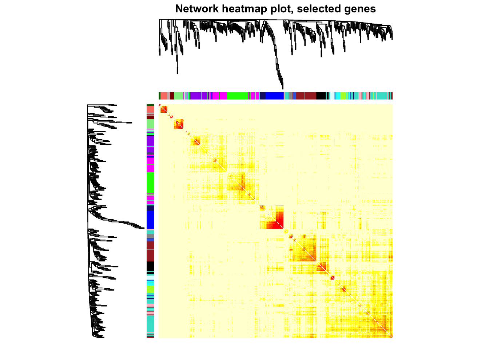
Based on the clustering below, it is co-expression network represented by the color green.
# Additional visualizations
# Recalculate module eigengenes
MEs = moduleEigengenes(datExpr, moduleColors)$eigengenes
# Isolate weight from the clinical traits
weight = as.data.frame(datTraits$weight_g);
names(weight) = "weight"
# Add the weight to existing module eigengenes
MET = orderMEs(cbind(MEs, weight))
# Plot the relationships among the eigengenes and the trait
#sizeGrWindow(5,7.5);
#par(cex = 0.9)
plotEigengeneNetworks(MET, "", marDendro = c(0,4,1,2), marHeatmap = c(3,4,1,2), cex.lab = 0.8, xLabelsAngle
= 90)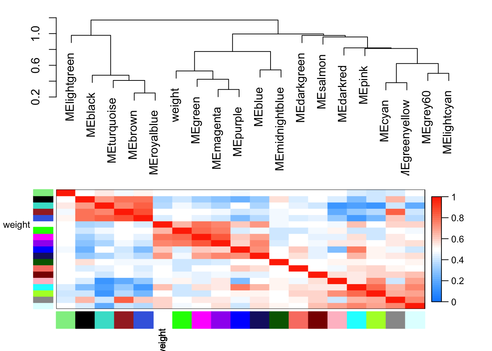
# Plot the dendrogram
#sizeGrWindow(6,6);
#par(cex = 1.0)
plotEigengeneNetworks(MET, "Eigengene dendrogram", marDendro = c(0,4,2,0),
plotHeatmaps = FALSE)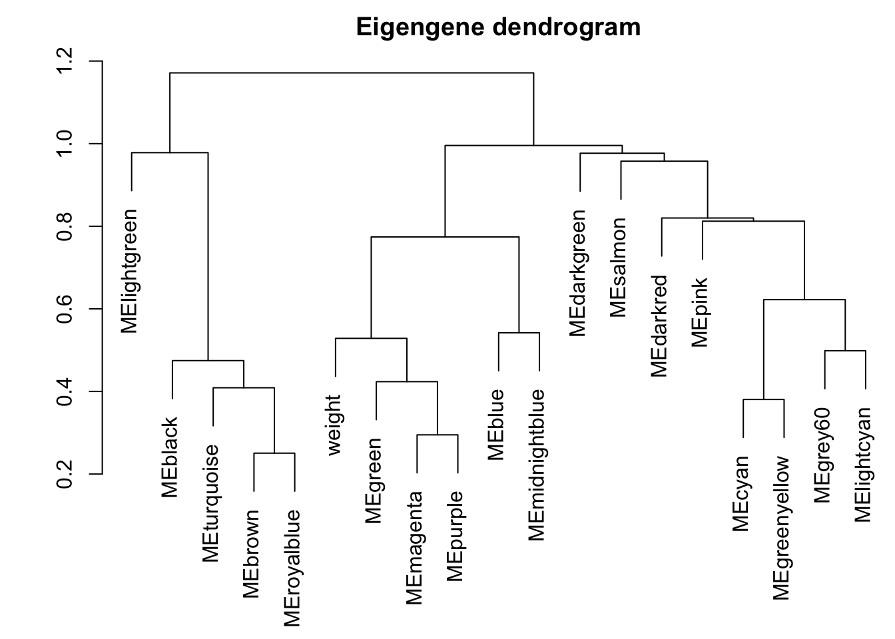
# Plot the heatmap matrix (note: this plot will overwrite the dendrogram plot)
#par(cex = 1.0)
plotEigengeneNetworks(MET, "Eigengene adjacency heatmap", marHeatmap = c(3,4,2,2),
plotDendrograms = FALSE, xLabelsAngle = 90)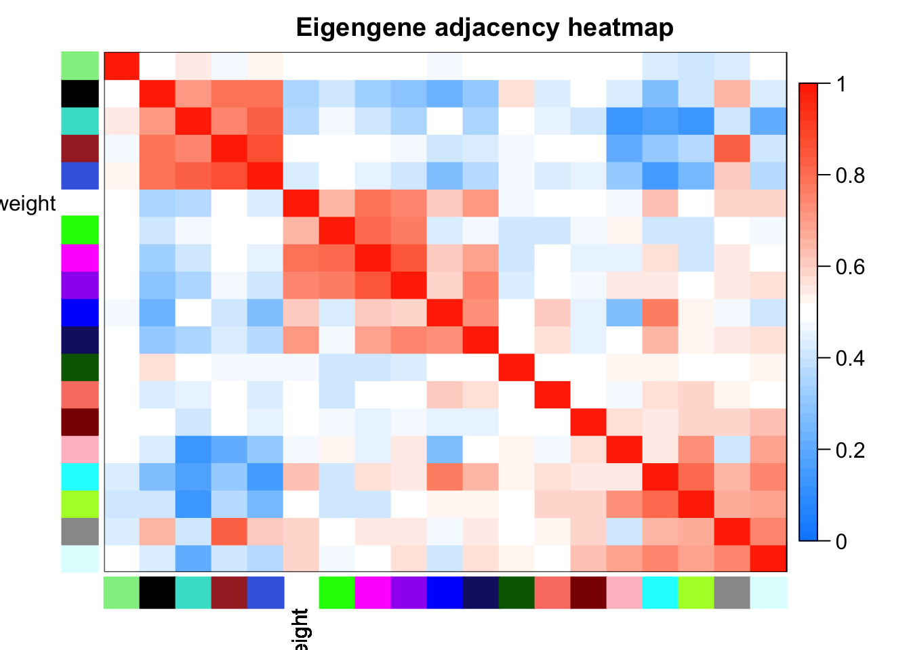
sessionInfo()R version 3.4.3 (2017-11-30)
Platform: x86_64-apple-darwin15.6.0 (64-bit)
Running under: OS X El Capitan 10.11.6
Matrix products: default
BLAS: /Library/Frameworks/R.framework/Versions/3.4/Resources/lib/libRblas.0.dylib
LAPACK: /Library/Frameworks/R.framework/Versions/3.4/Resources/lib/libRlapack.dylib
locale:
[1] en_US.UTF-8/en_US.UTF-8/en_US.UTF-8/C/en_US.UTF-8/en_US.UTF-8
attached base packages:
[1] parallel stats4 stats graphics grDevices utils datasets
[8] methods base
other attached packages:
[1] org.Mm.eg.db_3.5.0 anRichment_0.82-1 GO.db_3.5.0
[4] AnnotationDbi_1.40.0 IRanges_2.12.0 S4Vectors_0.16.0
[7] Biobase_2.38.0 BiocGenerics_0.24.0 WGCNA_1.63
[10] fastcluster_1.1.24 dynamicTreeCut_1.63-1
loaded via a namespace (and not attached):
[1] robust_0.4-18 Rcpp_0.12.15 mvtnorm_1.0-7
[4] lattice_0.20-35 rprojroot_1.3-2 digest_0.6.15
[7] foreach_1.4.4 plyr_1.8.4 backports_1.1.2
[10] acepack_1.4.1 pcaPP_1.9-73 RSQLite_2.0
[13] evaluate_0.10.1 ggplot2_2.2.1 pillar_1.1.0
[16] rlang_0.1.6 lazyeval_0.2.1 rstudioapi_0.7
[19] data.table_1.10.4-3 blob_1.1.0 rpart_4.1-12
[22] Matrix_1.2-13 checkmate_1.8.5 preprocessCore_1.40.0
[25] rmarkdown_1.9 splines_3.4.3 stringr_1.3.0
[28] foreign_0.8-69 htmlwidgets_1.0 bit_1.1-12
[31] munsell_0.4.3 compiler_3.4.3 pkgconfig_2.0.1
[34] base64enc_0.1-3 htmltools_0.3.6 nnet_7.3-12
[37] tibble_1.4.2 gridExtra_2.3 htmlTable_1.11.2
[40] Hmisc_4.1-1 codetools_0.2-15 matrixStats_0.53.1
[43] rrcov_1.4-3 MASS_7.3-48 grid_3.4.3
[46] gtable_0.2.0 DBI_0.7 git2r_0.21.0
[49] magrittr_1.5 scales_0.5.0 stringi_1.1.7
[52] impute_1.52.0 doParallel_1.0.11 latticeExtra_0.6-28
[55] robustbase_0.92-8 Formula_1.2-2 RColorBrewer_1.1-2
[58] iterators_1.0.9 tools_3.4.3 bit64_0.9-7
[61] DEoptimR_1.0-8 fit.models_0.5-14 survival_2.41-3
[64] yaml_2.1.18 colorspace_1.3-2 cluster_2.0.6
[67] memoise_1.1.0 knitr_1.20 This R Markdown site was created with workflowr